Suppose the GPU must read four numbers, transform each number, and return the result. With input [0, 1, 2, 3] and the rule y = 2x + 1, the answer is [1, 3, 5, 7]. The arithmetic is almost trivial. Making that answer arrive reliably is not: input bytes must reach a buffer, the compute shader must wait for them, the destination must have usable storage, and the CPU must not read the result while the GPU is still writing it.
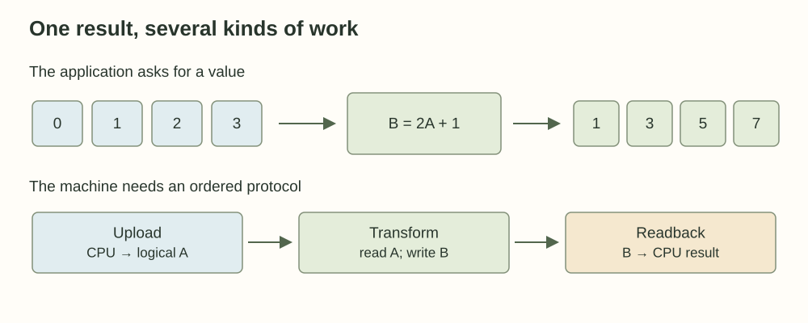
A few GPU terms will help before we meet the C++ types. A shader is a GPU program. A pipeline combines executable shader stages with the settings needed to run them; a compute pipeline may have one compute stage, while a graphics pipeline has stages with different jobs. A binding connects a shader argument to the resource or value it should use. The rendering hardware interface (RHI) is Arda's abstraction over the native devices and graphics APIs that implement these operations.
A command list records work for later submission. A queue is an ordered submission lane on the device; independent lanes may overlap. A resource state describes an allowed usage at a point in that execution: copy destination, shader-readable input, or writable storage, for example. A shader resource view (SRV) exposes a resource for shader reads. An unordered access view (UAV) exposes supported shader storage access, including writes; “unordered” does not mean the application can ignore dependencies. Later chapters explain the transitions and waits that make these usages safe.
A graph system lets us describe those obligations separately from the final command stream. We say which operation reads which resource, which operation produces a result, and which results must survive. A compiler then turns this description into a legal and potentially more efficient execution plan. The interesting part is what information that compiler is allowed to use, what it can prove, and what remains the caller’s responsibility.
Arda has several layers that can all be called a graph. ArdaGraph provides generic directed-graph storage and algorithms. ArdaDependencyGraph adds the meaning of GPU operations, resource regions, typed parameters and persistent revisions. Structural preprocessing makes that authored program explicit. Inductor chooses and records an execution plan. The runtime translates that plan into native resource operations, submissions, and completion receipts. These layers cooperate, but a node in one representation is not automatically one shader dispatch, one queue submission, or one independently allocated buffer.
This essay follows the same small program through those layers. We will add an unused debugging branch, a second writer, an independent computation, and two temporary resources only when each addition forces a new idea. That progression gives names such as FArdaGraphEdit and FArdaInductorCompileResult a job before asking you to remember them. Tables describe what the important types carry. Diagrams show which dependencies, allocations and lifetimes change as the example grows.
The implementation studied here is the project’s working tree on 14 October 2026, including newer graph and compiler changes not yet present in the published API reference. File ranges and content hashes are recorded in the source notes. Numerical schedules are explanatory examples, not measurements. ArdaInductor compiles a graph into an execution plan; it does not synthesize the shader implementing y = 2x + 1. The later model-export chapters explain the separate offline compiler that does generate kernel implementations.
Start with the work the application wants done
Imagine an application that uploads an array A, transforms it into B on the GPU, and reads B back to the CPU. During development it can also compute a diagnostic image from A. This is already enough work to expose the central problems of a GPU graph: which operation produces each input, which intermediate values remain necessary, when storage can be reused, and which operations can overlap. A command buffer can express an answer to those questions. A graph preserves the information needed to derive an answer.
We will keep this same small workload throughout the essay. The transform might be a compute shader, a CUDA kernel, or a reusable subgraph. Its mathematical meaning is simply B[i] = 2 * A[i] + 1. The exact arithmetic matters less than the boundary around it: read a declared region of A, write a declared region of B, and expose every other observable effect. Once that boundary is explicit, the graph compiler can reason about the operation without understanding the shader's implementation.
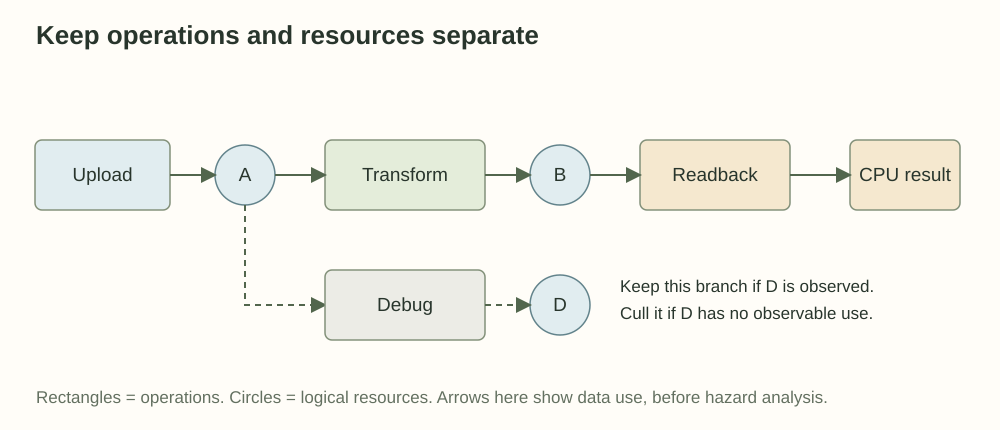
In Arda, the word graph refers to several related layers. ArdaGraph is a general directed-graph container. It knows about vertices, edges, handles, and graph algorithms. ArdaDependencyGraph adds GPU-work meaning: resource declarations, parameterized operations, typed stage connections, and the construction lifecycle. ArdaInductor turns that description into an execution plan. The backend supplies the devices, pipelines, resources, and commands used to carry out that plan. The layers have different responsibilities even though the public umbrella header makes them convenient to include together. [model-graph-foundation] [model-graph-lifecycle]
| Layer or type | Information it owns or provides | Meaning in the example |
|---|---|---|
TArdaDirectedGraph | Stable node/edge identities, payload storage, adjacency, deterministic topology algorithms. | A producer can precede a consumer; the container itself does not know what an upload is. |
FArdaDependencyTopology | The generic graph specialized with frozen node descriptions and dependency-edge meanings. | The transform carries its definition and declared accesses; an edge can identify a consumed value or an overwrite hazard. |
FArdaDependencyGraph | Resource declarations, construction transactions, reusable revisions, compilation and execution entry points. | The application can repeatedly execute one construction or select a cached construction with the debug branch enabled. |
FArdaGraphEdit | A private authoring scope with first-error retention and atomic publication. | Upload, transform and readback become one coherent proposed construction. |
| ArdaInductor and its compile result | The derived schedule, memory and execution requirements discussed in the following chapters. | Resolve the dependencies and choose how the live work will execute. |
| ArdaBackend / RHI | Native device abstractions and concrete resource and command operations. | Eventually allocate storage, bind a pipeline, dispatch work and transfer results. |
This separation is why the graph can be useful before a GPU submission exists. An allocation operation declares logical storage; it does not immediately allocate a native GPU buffer. A committed edit queues declarations; it does not launch work. Structural analysis can inspect a graph without native bindings, while device-dependent node requirements still constrain which operations can be prepared or executed. These boundaries let an editor, serializer, compiler, and runtime share one semantic model. [model-resource-operations] [model-graph-lifecycle]
There is also a lifecycle distinction worth establishing immediately. Arda's public graph is persistent and caches executable revisions. The application may nevertheless describe a fresh construction after an execution attempt. Persistence belongs to compiled revisions and retained runtime state; it does not mean every ordinary edit appends forever to the last frame's topology. We will return to this when the example reaches its second frame. Keeping those two ideas separate avoids importing the wrong assumptions from a conventional frame-local render-graph builder. [model-revision-tests]
A graph needs identities before it needs GPU semantics
At the bottom of the implementation, TArdaDirectedGraph<NodePayload, EdgePayload> owns arbitrary payloads. A node can contain a GPU operation, but it could equally contain a task from another domain. The implementation maintains incoming and outgoing adjacency rather than reconstructing connectivity for each query. An outgoing-neighbor index identifies an edge by its endpoint pair. Adding the same directed pair again reuses its edge; self-edges are representable and can subsequently be diagnosed as cycles. [model-graph-foundation]
The public identity is a handle, not a pointer into a vector. TArdaGraphHandle combines a slot index, a generation, and an owning graph identity. The index locates storage. The generation distinguishes successive occupants of a reused slot. The graph identity distinguishes an otherwise identical slot in another graph. Looking structurally valid is insufficient: ContainsNode and ContainsEdge verify ownership, generation, and liveness together. A handle cannot quietly start referring to an unrelated operation after its original node is removed. [model-handle] [model-handle-lookup]
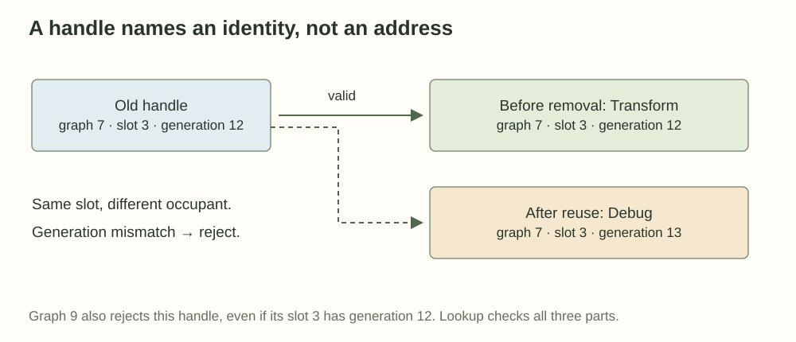
This matters beyond defensive programming. Editing needs stable references while an operation is being inserted, inspected, or rolled back. The graph deliberately supports snapshot cloning while ordinary copying is disabled. A snapshot retains graph identity and existing handles, but shares a lineage that issues fresh generations. If an edit creates a node and is abandoned, a later edit cannot accidentally resurrect that abandoned handle. The low-level graph does not add automatic synchronization; mutation requires synchronization from its owner. The transactional dependency-graph layer supplies a more specific concurrency contract above it. [model-graph-snapshots]
The same foundation produces deterministic topological results. FArdaGraphTopologicalResult contains an ordered acyclic prefix, a concrete closed cycle witness, and the nodes blocked by cycles. The distinction between a cycle and a node blocked downstream of a cycle is useful. If the upload waits for the transform and the transform waits for the upload, the readback is also unschedulable, but it is not itself part of the contradictory loop. A diagnostic can point at the loop instead of blaming every affected operation. [model-topological-result]
FArdaDependencyTopology then specializes this container. Its node payload, FArdaDependencyNode, retains the operation name, canonical identity, immutable registered definition, public parameter snapshot, outputs, original attachment order, and declarative description. It also has compiler-owned annotations for stage lowering, culling, and array invocation provenance. Those annotations are consequences of analysis; they are not extra commands the application must manually invent. [model-topology]
Its edge payload carries two booleans: mbResource and mbHazard. A resource edge says that one operation consumes a value produced by another. A hazard edge can say that a reader must finish before the next overwrite without claiming that the writer needs the reader's output. The two flags preserve different reasons for ordering. They do not guarantee that dead-work removal will ignore hazard edges: the current culling walk conservatively follows incoming edges, as the compiler chapter explains. The graph can combine both meanings on one endpoint pair. The hazard builder explicitly ORs the appropriate flag into the existing edge payload. [model-topology] [model-hazard-resolution]
For our first workload, the edges are easy: upload produces the contents read by transform, and transform produces the contents read by readback. Now add a second upload into A after the transform. The transform must finish reading the first contents before the overwrite. That extra ordering does not mean the second upload consumes the transform's result. Thinking in terms of these separate meanings makes later optimization behavior much easier to predict.
Describe resources and accesses before choosing their storage
The arrow labeled A in our drawing is a logical resource. In C++, FArdaGraphBuffer is a small typed wrapper around FArdaDependencyResourceHandle. It does not own a buffer, contain its bytes, or encode a freshly immutable version of its contents. Copying the wrapper produces another reference to the same logical resource, including later in-place writes. The graph validates the handle's owning graph, generation and resource category when it enters the typed facade. [model-resource-identity] [model-typed-values]
| Type or record | Concrete information | How the information is used |
|---|---|---|
FArdaDependencyResourceHandle | mGraph, mIndex, mGeneration. | Identify a live logical resource and reject stale or foreign references. |
FArdaGraphBuffer, FArdaGraphTexture, FArdaGraphAccelerationStructure | The checked logical handle with a compile-time storage category. | Make passing a texture to a buffer operation an explicit type/validation error. |
FArdaDependencyResourceDesc | Name; buffer/texture/acceleration-structure description; persistent/output flags; external kind and optional binding; optional initialized-buffer bytes. | Describe what storage must exist and whether it comes from the graph or its caller. |
FArdaDependencyAccess | Resource, read/write mode, required resource state, buffer range or texture subresource range. | State that transform reads A and writes B; later derive conflicts, visibility requirements and lifetimes. |
FArdaGraphTensor | mBuffer plus FArdaRHITensorDesc mDesc. | Give a buffer a dtype, shape, strides and byte origin without introducing another allocation. |
The tensor view in the table has no independent allocation or copy operation: resolving it uses the ordinary buffer lookup and checks bounds and layout requirements. This keeps tensor algorithms inside the same resource model as graphics and transfer work. [model-tensor]
A declaration and a binding are different. AllocateBuffer declares graph-owned storage. BindBuffer imports retained native storage under a stable name. DeclareExternalBuffer creates a named slot without supplying storage yet, so a loaded graph can be rebound on the destination device. The descriptor preserves the expected external kind even while unbound; an empty native reference therefore does not erase the slot's meaning. Textures and acceleration structures have corresponding typed paths. [model-resource-description] [model-resource-operations]
Graph-owned resources also declare a lifetime policy. Transient storage may alias other logical resources when their lifetimes allow it. Persistent storage retains dedicated storage and contents across executions of the selected revision. AllocateInitializedBuffer adds an owned, nonempty initialization prefix: cold physical preparation uploads it once per new allocation, and later compatible reuse preserves the storage. It does not establish contents beyond the prefix. By contrast, an ordinary Upload is recorded graph work and belongs to the repeated execution. An immutable lookup table and a stream of changing frame inputs should therefore not be represented identically. [model-resource-operations]
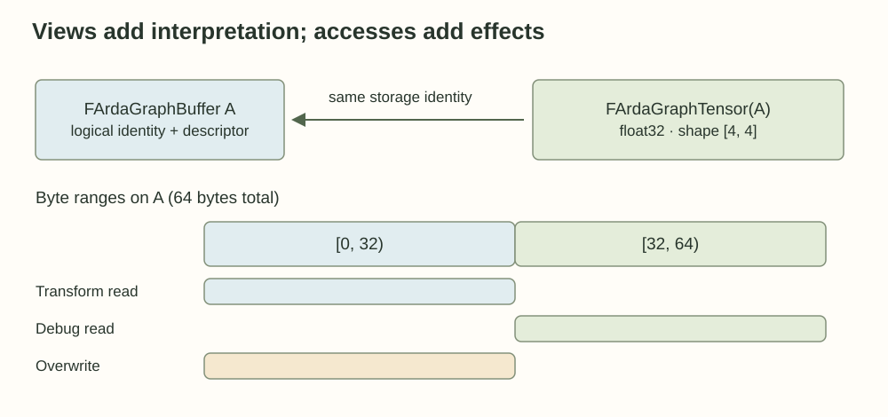
The access declaration is the compiler's knowledge of effects. Read consumes prior contents; Write supplies contents; ReadWrite both consumes the preceding value and produces a new one in place. A buffer range narrows the declaration to bytes; a texture range selects subresources rather than individual texels. The declaration must cover what the executable actually accesses. Merely using a pointer in a native callback does not teach the compiler about that dependency. Shader parameter schemas can derive shader accesses, but non-shader effects still need explicit declarations. [model-resource-identity] [model-node-description]
Attachment order has a precise role here. When a region has a unique producer, Arda can resolve its consumer even if the consumer was attached first. With multiple producers of the same region, reads observe the preceding producer in attachment order, and readers are ordered before the following overwrite. ReadWrite consumes its input before acting as a producer. Disjoint regions can remain independent. This is why a seemingly harmless reorder of two writes changes program meaning, while reordering declarations in a unique-producer graph need not. [model-hazard-resolution]
A runnable starting point can avoid custom shaders entirely. The following complete function uses the current public operations to upload sixteen bytes, copy A into B, and read B back. It expects an already-created, supported RHI device and belongs in a target linked against ArdaDependencyGraph and its backend. The error handling is deliberately visible: the edit collects authoring failures, compilation reports planning failures, and execution reports runtime failures. This is an authored example using the same facade exercised by the operation tests; it does not include device creation. [model-resource-operations] [model-operation-gpu-test]
#include "ArdaDependencyGraph.h"
arda::FArdaRHIStatus CopySixteenBytes(
arda::FArdaRHIDeviceRef Device,
eastl::vector<uint8_t>& Result)
{
using namespace arda;
FArdaDependencyGraph Graph(Device);
FArdaRHIBufferDesc Desc;
Desc.mByteSize = 16;
Desc.mUsage = EArdaRHIBufferUsage::UnorderedAccess;
FArdaGraphEdit Edit(Graph);
const auto A = AllocateBuffer(Edit, Desc, "A");
const auto B = AllocateBuffer(Edit, Desc, "B");
Upload(Edit, A, eastl::vector<uint8_t>(16, 7));
CopyTo(Edit, A, B);
const auto CpuBytes = Readback(Edit, B);
if (auto Status = Edit.Commit(); !Status)
return Status;
if (auto Status = Graph.Compile(); !Status)
return Status;
auto Execution = Graph.Execute();
if (!Execution.mStatus)
return Execution.mStatus;
Result = *CpuBytes; // Completion has published sixteen bytes of value 7.
return {};
}Before Execute, CpuBytes is a retained destination for future CPU output. It is not permission to inspect an in-flight readback. The API requires consuming that vector after successful Execute or Wait, and serializing executions that share it. Replacing CopyTo with a transform node changes the work declaration; the surrounding graph lifecycle stays the same. [model-readback]
Make each operation explain its meaning once
A custom transform needs an executable implementation, but the graph cannot plan from executable code alone. It also needs a stable definition identity, a parameter schema, resource effects, and any pipeline or device requirements. Arda gathers these through TArdaNodeDefinition<Node, Parameters, EArdaNodeType>. This is a CRTP contract: the template names its derived node class and supplies common registration and invocation machinery. The same entry point covers ordinary compute/copy/CUDA operations, complete graphics work, individual pipeline stages, and subgraphs, while each category supplies an appropriate execution hook. [model-node-definition]
The parameters are more than a bag of values. Macro-authored parameter structs expose inspectable metadata and typed callbacks for applying effects, producing semantic keys, and serializing supported fields. The implementation stores pointer-to-member behavior rather than assuming a byte offset is a sufficient description of an arbitrary C++ field. This connects several jobs that would otherwise drift apart: the resource used by execution, the dependency visible to the scheduler, and the value represented in a cache key. [model-parameter-schema]
| Declaration or metadata | Information supplied | Example |
|---|---|---|
| Ordinary value parameter | A named semantic input with a supported key/codec or an explicit custom encoding. | The transform's multiplier is 2 and its bias is 1. |
| Buffer or texture parameter | Logical resource category, access mode and required state. | Read A as a shader resource; write B as unordered access. |
| Shader resource mapping | Source shader metadata/member, pipeline slot, view and array element. | Bind A to the shader's declared source argument and derive its access contract. |
| CUDA resource mapping | Compute-parameter schema/member and checked resource category. | Resolve A's logical storage into the CUDA argument at execution preparation. |
| Stage input | A typed logical producer connection. | A pixel stage consumes a raster stage's logical output, not an implicitly materialized buffer. |
| Tensor parameter | The same underlying buffer plus validated shape/stride/dtype semantics. | Treat A as a 4-by-4 float tensor without duplicating its storage. |
Here is an illustrative parameter declaration for the transform. It shows the semantic contract, not a complete dispatch implementation: a real node still needs its shader preparation, pipeline request, bindings and Record hook. Where a shader schema already declares the argument types and access modes, use the corresponding shader mapping macros so the two contracts are checked together.
ARDA_BEGIN_NODE_PARAMETER_STRUCT(FScaleParameters)
ARDA_NODE_BUFFER(mSource,
EArdaDependencyAccess::Read,
EArdaRHIResourceState::ShaderResource)
ARDA_NODE_BUFFER(mDestination,
EArdaDependencyAccess::Write,
EArdaRHIResourceState::UnorderedAccess)
ARDA_NODE_PARAMETER_WITH_DEFAULT(float, mMultiplier, 2.0f)
ARDA_NODE_PARAMETER_WITH_DEFAULT(float, mBias, 1.0f)
ARDA_END_NODE_PARAMETER_STRUCT()For a new invocation, the framework checks requirements, resolves declared outputs, validates/prepares the declaration, and retains immutable parameter data. A DeclareResources hook can fill an empty destination from its input descriptor or validate a caller-supplied destination. FArdaGraphOperation::GetBuffer("Destination") retrieves that declared output. The operation wrapper is meant to be used while its edit is open; retrieve outputs before compilation, because compilation may select the topology of a matching cached revision. [model-node-contract] [model-operation-output]
| Fields | Purpose | Transform or debug example |
|---|---|---|
mAccesses | Resolved resource effects for dependency and hazard analysis. | Read A's selected range; write B's selected range. |
mShaderBindings, bindless/shader tables | Describe binding layouts and logical resources; retained physical bindings are prepared later per frame slot. | Map A and B into the selected compute pipeline. |
mPipelineStages, mPipelines | Prepared shader contributions and requested pipelines. | Request the pipeline implementing the scale operation. |
mColorTargets, mDepthTarget | Declare render attachments for graphics operations. | A later visualization pass renders the transformed data. |
mEstimatedCost, mWorkspaceBytes, mTransientWorkspaceBytes | Scheduling estimate, retained adapter memory, and aliasable node-local graph workspace. | Expose scratch memory that the scheduler otherwise cannot budget. |
mbSideEffect | Preserve observable work even when no resource result is consumed. | A diagnostic export cannot be removed merely because its output buffer has no graph reader. |
Several description fields are deliberately compiler-owned. A node selects its graphics/ray stage through EArdaNodeType and stage-input metadata; Describe must not spoof stage identity, connections or stage-only scheduling flags. Likewise, explicit device admission facts come from GetRequirements, with recognizable descriptor features added by the framework. These restrictions keep the extension mechanism modular without allowing a new node to silently bypass the semantic rules used by every other node. [model-node-description]
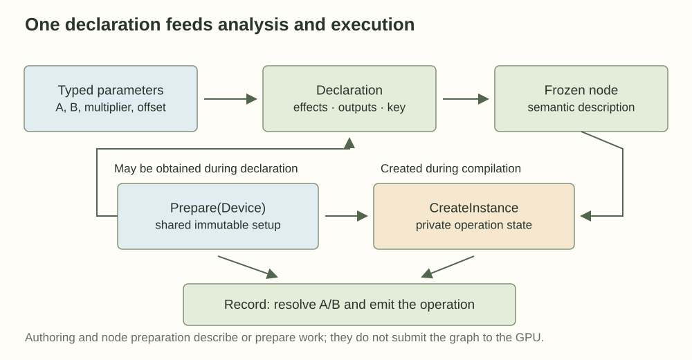
| Type or hook | Owns/provides | Appropriate use |
|---|---|---|
FArdaParameters | One invocation's public semantic inputs, retained as a const snapshot. | A, B, multiplier 2 and bias 1. |
FArdaState / Prepare(Device) | Immutable setup determined by node type and device, with a weak shared cache. | A prepared shader or module reusable by compatible instances. |
FArdaInstanceState / CreateInstance | Private mutable operation state; may depend on parameters and prepared state. | Instance-specific recording data whose memory requirements are also declared. |
Describe | Pipeline needs and effects in addition to metadata-derived declarations. | Select a pipeline variant and expose any extra resource access. |
Record or PrepareCuda | Native recording or appended CUDA sequence operations through the execution context. | Carry out the transform with the resolved resources. |
FArdaDependencyNodeExecutable | An immutable erased definition retained by graph nodes; the registry exposes a const view. | Keep this implementation valid even if its library name is later unregistered. |
The timing of these hooks also differs. Attachment can already obtain shared Prepare(Device) state to describe the declaration. Private CreateInstance state is created later during compilation and receives that prepared state. Neither step submits this graph for execution. [model-node-contract]
The registered definition is retained independently of its name in the process-wide registry. Removing the name from future lookup does not invalidate graph instances that already hold the immutable executable. This gives library management a clear lifetime boundary. [model-registry]
The immutable snapshot is not a deep copy of everything reachable through a pointer. Nested pointees still require appropriate lifetime and synchronization discipline. A node's canonical key must cover every behavior-affecting semantic input, excluding structure padding and native resource addresses. FArdaDependencyKeyBuilder encodes complete canonical bytes; its result is not merely a hash digest. Construction-key normalization lets equivalent fresh logical handles match earlier constructions without weakening ordinary stale-handle validation. Omitting the multiplier from a custom key would make two different transformations look identical to reuse machinery. [model-node-contract] [model-canonical-key]
Finally, a definition name is not an operation identity. Ordinary facade invocations obtain fresh operation names, so two identical uploads separated by a readback remain two operations. An explicitly reused name only resolves to an existing node when definition identity and canonical parameters match; otherwise the collision is rejected. This preserves the distinction between reusing implementation and erasing an occurrence of work. [model-operation-invocation] [model-operation-identity-test]
Publish a construction, then select a persistent revision
The smallest useful edit is a transaction: either its valid declarations enter the pending construction together or they do not. FArdaGraphEdit records privately, retains the first error, and makes later operations inert after failure. Commit returns that failure without publishing a partially authored graph. The failed scope remains open until cancellation or destruction. Destroying an uncommitted scope cancels it. This makes ordinary C++ scope exit a useful rollback boundary rather than leaving the compiler to discover half a workload. [model-edit-contract] [model-failed-edit-test]
| Operation/state | What changes | What the caller can do next |
|---|---|---|
Open FArdaGraphEdit | Create a private recording snapshot. A new post-execution construction begins empty. | Declare resources and invoke operations. |
Edit.Commit() | Publish valid declarations into the ordered edit queue; no compilation or GPU submission. | Add another scope to the same pending construction, or compile once all scopes close. |
Successful Graph.Compile() | Select a cached revision or compile a new one; clear the queue and lock further edits. | Attempt Submit or Execute. |
Failed Graph.Compile() | Retain the pending construction and diagnostics. | Add a corrective edit, or call DiscardPendingEdits. |
Submit / Execute attempt | Unlock authoring, including when submission fails; first submission materializes the pending runtime plan. | Submit a healthy revision again, or repair and recompile after runtime failure; authoring is unlocked. |
| Repeated submission without new edits | Reuse the selected persistent runtime. | Execute again; asynchronous tickets govern completion and resource access. |
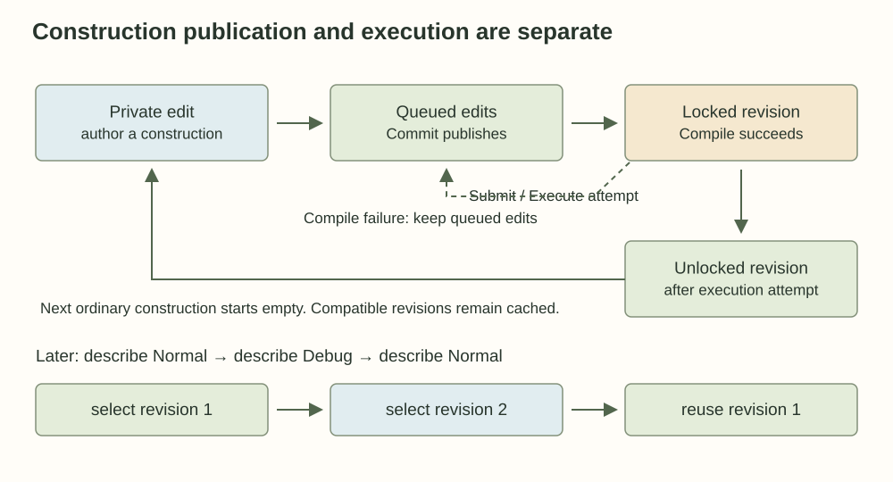
The second frame exposes why this design has both construction identities and resource generations. Suppose frame one uses upload, transform and readback. Frame two records the same operations with equivalent descriptors and semantic parameters. It receives fresh logical handles, because the new construction is not allowed to borrow stale frame-one handles. Nevertheless, normalized construction identity can select the same cached revision, keeping the original compilation identity and incrementing the cache-hit counter rather than the compile counter. The revision tests exercise this exact behavior. [model-revision-tests]
Now enable the optional debug branch. That produces a different construction. Returning to the original construction can select its retained revision again. The default cache holds up to four reusable revisions; the capacity is configurable with a minimum of one. Explicit names, resource descriptors, compiler options, operation order, and edit order participate in construction identity. This is structural reuse under a defined semantic key, not a promise that any two programs computing equal mathematical results will share a revision. [model-revision-cache] [model-revision-identity-tests]
Failure recovery follows the same separation. The tests construct a readback from an uninitialized buffer, observe compilation failure, then add an upload in a second edit. The unique producer can be resolved even though it was attached later, so compilation succeeds without discarding the earlier valid declaration. An authoring failure inside a scope is different: that scope has already retained its first error and must be canceled. This distinction tells application code whether to repair a closed construction or retry a private transaction. [model-revision-repair-test]
Concurrency is similarly specific. Different threads may record independent edit scopes simultaneously. Each scope sees the construction committed before it opened, not another thread's private work. Publication is serialized and commit order determines attachment order. Conflicting explicit names/imports or option changes fail atomically. A single scope belongs to one thread, and general graph inspection and execution still require external synchronization. Parallel recording therefore does not imply arbitrary concurrent mutation of one scope or concurrent submission while it is still being authored. [model-edit-contract] [model-concurrency-tests]
Extend and transport the semantic program
Once an operation has a declared interface, composition can happen above its implementation. A class with EArdaNodeType::Subgraph supplies a Build hook instead of an execution callback of its own. During preprocessing, its FArdaSubgraphContext provides a private edit for ordinary child operations. The builder requests named inputs from parent parameter metadata, accesses parent outputs, and publishes compatible output storage. Nested subgraphs use the same mechanism. Our transform can thus expand into normalize, scale and clamp without forcing its callers to manually reproduce those internal operations. [model-subgraph] [model-node-definition]
The interface is still about logical storage. Publishing a subgraph output can forward parent storage, a readable input, or compatible content storage without copying bytes merely to cross a composition boundary. That gives the compiler visibility into internal work after expansion. It also puts responsibility on the builder to describe its inputs and outputs accurately; composition does not exempt a node from resource validation or ordinary dependency analysis.
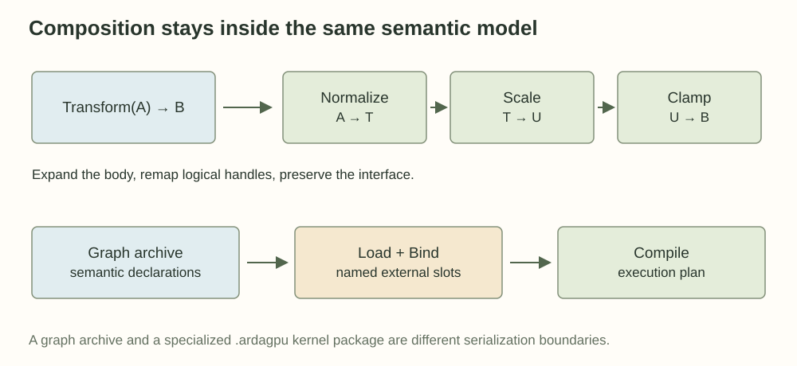
Array invocation offers another form of composition. Edit.Invoke can accept an array of complete parameter snapshots, or zip array-valued argument slots while broadcasting reusable scalar slots. Each lane remains a distinct logical operation, and the compiler receives shared invocation-family provenance for compatible batching. Array lengths are checked before attachment; a bad lane poisons the edit rather than publishing a partial family. Vectorized authoring is therefore an explicit collection of operations, not a blanket claim that arbitrary callbacks become one kernel. [model-array-invocation]
Transport requires another boundary: the graph's semantic description must be separated from process-local execution objects. FArdaGraphSerialization, also exposed through graph methods, writes a deterministic versioned binary construction. It records named definitions, public parameter fields, resources, connections, and registered rule configuration. Native imports become named typed slots; prepared execution objects, telemetry and device state are excluded. Loading produces a new graph with queued construction. Required bindings must be supplied and compilation performed for the destination device. [model-serialization]
| Representation | Contains | Boundary to remember |
|---|---|---|
| Graph archive | Structural construction, serializable public parameters, resources/connections, definition identity and rule settings. | Not a saved command buffer. Native class definitions must be registered; bindings and execution objects are restored separately. |
FArdaRuntimeNodeDesc | Embedded PTX/cubin, entry point, target compatibility, version and exact packed CUDA argument ABI. | The current data-authored node path is a validated CUDA kernel contract, not an arbitrary native function or unrestricted host program. |
FArdaRuntimeNodeParameters | Logical buffer ranges or owned scalar bytes, plus grid/block dimensions and shared-memory size. | Invocation data stays separate from immutable kernel implementation. |
FArdaGraphPackage | A validated compiled package with tensor interfaces, constants, device artifacts and operation recipes. | Invocation expands into ordinary caller-graph operations. Version one requires fully specialized shapes and supported ordered dispatch/fill/copy recipes. |
The runtime definition is particularly useful for compiler integration. Registration copies and validates its immutable implementation without touching a GPU. Invocation enters the ordinary edit and node-registry path, so the rest of Arda sees declared reads and writes rather than an opaque foreign scheduler. Its argument schema accepts logical buffer ranges or scalar representations; it does not accept arbitrary native pointers or external calls. Portable kernel definitions can be embedded in graph archives, while class-authored native implementations must already exist in the destination process. Malformed archives and incompatible versions fail before publishing a partial graph or definition library. [model-runtime-definition] [model-serialization]
The package path goes further by representing a compiled tensor program whose inputs and outputs are FArdaGraphTensor views. It is distinct from serializing an existing graph construction, even though both ultimately enter the same graph machinery. The compiler chapters will follow how that package is produced and what behavior the exporter rejects. For now, the architectural consequence is enough: custom C++ nodes, expanded subgraphs, portable kernels, and package operations all converge on one resource-and-operation model. The next step is to see how ArdaInductor proves which work is necessary and turns the live program into a legal execution plan. [model-package]
Make the meaning explicit before choosing an execution plan
The graph we have authored says that an upload produces A, a computation reads A and produces B, and a readback makes B observable. It may also contain a debug branch that writes a temporary result nobody observes. This is enough to express the intended work, but it is not yet enough to execute it. A composite operation may hide more operations. A graphics stage may describe part of a draw rather than a separate GPU command. Resource usage flags may still be automatic. Dependencies must account for the precise bytes or texture subresources being accessed. Before choosing queues or allocating memory, Arda makes those meanings explicit.
That job belongs to FArdaPreprocessor. Its output is another FArdaDependencyGraph, with expanded operations, assembled stages, resolved resource usages, dependency edges and culling annotations. Its output is still a graph, not an execution plan. FArdaInductor consumes that preprocessed graph and produces a FArdaInductorCompileResult: the selected order, allocations, batches, dispatches and synchronization requirements. The separation is visible in the APIs, not merely a diagram imposed on the implementation. The standalone compiler rejects an input that has not been preprocessed. Source: preprocessing and compilation entry points.
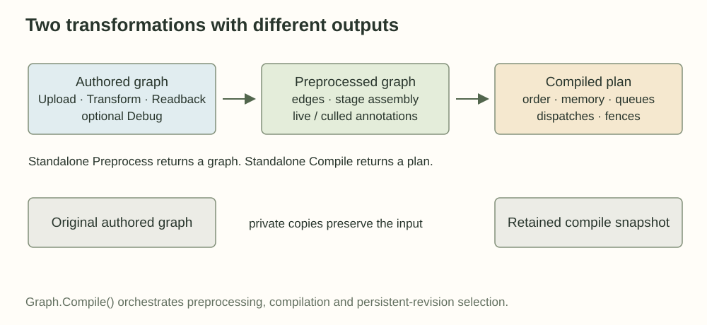
The two steps also establish ownership boundaries. Preprocess() takes a lock on the source revision state, requires closed edits, and clones the construction. Rules mutate the copy; a failure discards it and releases the source guards. Successful preprocessing leaves the original graph unmodified. A caller can inspect the returned graph, serialize it, or edit it again. An edit invalidates its preprocessed status because the earlier analysis no longer describes the new construction. The tests explicitly check that culling changes only the returned graph and that it initially contains neither prepared node states nor an execution order. Source: standalone preprocessing tests.
Standalone compilation clones that graph again. The clone becomes retained input for the compiled result, so the result can outlive both source graph objects. Preparation and rule execution occur against this private snapshot; a failed rule never returns a partially successful plan. This is particularly useful when a renderer wants to keep using a known plan while constructing a replacement.
The two public entry paths perform the same essential stages at different levels of convenience. Graph.Compile(), used in our first C++ example, orchestrates preprocessing and Inductor compilation when a new plan is needed, then stages the selected persistent revision; a matching cached construction can reuse its plan. The standalone path calls FArdaPreprocessor::Preprocess first and passes its returned graph to FArdaInductor::Compile. Only that second, lower-level compile entry requires an already preprocessed input. It returns a separate result rather than selecting a revision on the original graph. [Graph convenience lifecycle] [Standalone compiler entry]
| Type | Information or operation it provides | Meaning in the running example |
|---|---|---|
FArdaPreprocessor | Preprocess(Source) returns a new graph after ordered structural and semantic rules. | Find the upload-to-compute relationship and mark the unobserved debug branch culled. |
FArdaInductorGraph | A borrowed rule view exposing topology, node descriptions, resource descriptions, options and the device. Preprocessing can use Edit, RemoveNode and EditResource; compile rules receive a const view. | A transformation can replace a composite compute operation with registered inner operations while keeping its resource interface meaningful. |
FArdaInductor | Compile checks a closed, preprocessed input, prepares node state, applies compile rules and validates the complete result. | Turn the surviving upload, compute and readback into an executable plan. |
The borrowed view is important: a rule is being invited to transform or inspect one compiler-owned snapshot, not to retain a permanent pointer into the renderer. Preprocessing may invoke registered node definitions through the normal editing API. Final validation rejects invented topology payloads without a valid definition and frozen public parameters. It also rejects leftover subgraph nodes, unassembled graphics or ray stages, duplicate names, cycles and missing required resource ordering. Extensibility therefore has a concrete contract: the transformation may change the graph, but its output must still be a valid graph in Arda's language. Source: the rule view. Source: post-preprocessing validation.
The default program is deliberately ordered. Expansion and stage assembly expose effects that later resource analysis needs to see. Usage deduction resolves allocation capabilities before access validation. Dependency resolution establishes the paths that culling follows. Moving these steps arbitrarily would change their inputs.
| Step | Rule | What becomes explicit |
|---|---|---|
| 1 | FArdaExpandSubgraphsRule | The implementation body behind a composite operation's interface. |
| 2 | FArdaAssembleGraphicsStagesRule | The stage chain and combined declarations belonging to each draw. |
| 3 | FArdaAssembleRayTracingStagesRule | The shader declarations belonging to each ray dispatch. |
| 4 | FArdaDeduceResourceUsageRule | Concrete resource usage flags required by accesses, bindings and attachments. |
| 5 | FArdaValidateResourceAccessesRule | Valid handles, ranges, access directions, states and attachment declarations. |
| 6 | FArdaResolveDependenciesRule | Value dependencies and overwrite hazards, in addition to authored ordering. |
| 7 | FArdaValidateAcyclicRule | A dependency graph with no cycle. |
| 8 | FArdaCullUnreachableRule | The nodes needed to preserve observable roots. |
This order is the current constructor of FArdaInductorRuleSet. It is configurable, but configuration does not bypass the validation at the end. For example, a graph with no subgraphs does not need expansion to do anything; a graph containing subgraphs cannot silently reach compilation with its interface nodes still unexpanded. Source: default rule program.
A resource edge answers which value a reader is allowed to see
Imagine A is a 1,024-byte buffer. The upload writes all 1,024 bytes; the compute node reads them and writes B. A dependency from upload to compute means more than “these two boxes are connected.” It means that the compute must see the value produced by the upload. If the graph is wrong about that relationship, every later optimization can preserve the wrong answer perfectly. Hazard analysis is where Arda gives resource access declarations their ordering meaning.
Each access includes a resource handle, a direction, an RHI state and a range. The direction answers whether the operation consumes data, produces data, or does both. The state answers how the backend must make the resource available to that operation. The range answers which bytes, or which mip/slice/plane combinations, are involved. These are separate facts. A read direction does not choose the resource state, and a state transition does not identify the producer of the contents being read.
| Type and member | Question it answers | Concrete example |
|---|---|---|
FArdaDependencyAccess::mResource | Which graph-owned resource identity is accessed? | The handle for A, validated against the current construction. |
mAccess | Read, Write or ReadWrite? | The computation reads A and writes B; an in-place filter uses ReadWrite. |
mState | What RHI access state does the operation require? | An upload destination is CopyDest; a shader-read input can be ShaderResource. |
mBufferRange / mTextureRange | Which portion requires ordering and valid contents? | Bytes [0, 512), or mip 2 of array slice 0. |
FArdaDependencyEdge::mbResource | Does the edge represent a producer-to-consumer value relationship? | Upload A precedes the computation that consumes A. |
FArdaDependencyEdge::mbHazard | Does the edge constrain an overwrite without consuming its value? | A read of old B must finish before the next writer overwrites B. |
The fields above come from the public access and topology types. With exactly one writer to an overlapping region, Arda can discover the producer even if the consumer was attached first. It collects the complete graph before resolving the relationship. The implementation explicitly preserves this consumer-first authoring behavior. Operation construction order therefore is not a universal execution order. But it becomes semantically relevant when the same region has several writers. Source: access fields. Source: topology fields. Source: producer selection and overwrite ordering.
Extend the example: upload A, compute A into B, read back B for an intermediate result, overwrite B with a second computation, and finally read back B again. The two readbacks must observe different contents. For repeated writers, the resolver orders nodes by their successful attachment order. A read consumes the preceding writer's value; it must complete before the next overwrite. Adjacent writers are also ordered. The first readback consequently cannot drift after the second computation simply because the scheduler finds that arrangement cheaper.
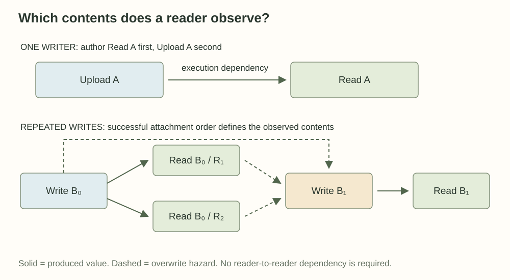
Two readers of the same written value do not need an edge between each other. Both depend on the preceding writer and, when present, both precede the next overwrite. That leaves the scheduler freedom to arrange independent reads. A ReadWrite operation has both roles: it consumes the preceding contents before producing the next contents. Its own write cannot satisfy its own initial read, and the resolver does not create a self-edge to pretend otherwise. Tests cover the four-operation sequence, independent reader groups, and both a combined ReadWrite declaration and separate Read plus Write declarations on one node. Source: repeated-write and ReadWrite tests.
The same logic is applied separately to overlapping ranges. A writer of [0, 512) and a writer of [512, 1,024) can together initialize the whole buffer without conflicting at the shared boundary. A later read of [0, 1,024) needs complete coverage from both. If the first writer stops at byte 500, the gap [500, 512) is an error. A future repeated write cannot retroactively initialize bytes an earlier read needed. For textures, the resolver expands the declared mip ranges within each selected array slice and format plane; it does not reason about individual texels. Source: range boundaries and coverage validation.
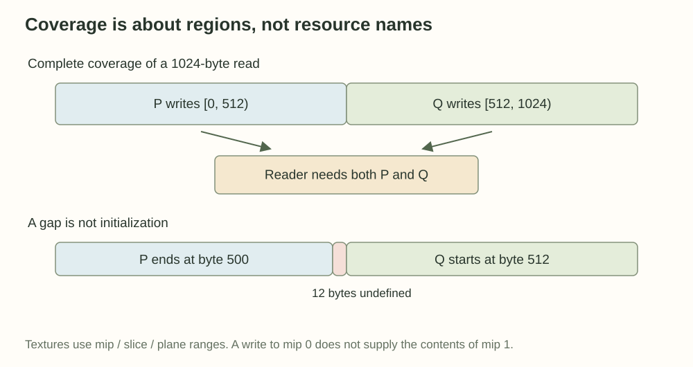
Internally the algorithm converts access ranges into start/end boundary events, sweeps those boundaries and maintains the active reader and writer sets for each interval. This makes “is every read region produced?” an interval question rather than a per-byte simulation. Imported resources may supply initial contents. An owned buffer can supply a declared initialization prefix, but only intervals wholly covered by that prefix count as initialized. Merely declaring persistent storage does not establish valid initial contents for arbitrary bytes.
These logical intervals do not erase native resource restrictions. Access validation rejects empty or out-of-bounds ranges rather than silently clamping them. It also rejects incompatible buffer states inside a single node even if the declared byte ranges are disjoint: those ranges still share one native buffer state. Acceleration-structure accesses have their own whole-object rules. A color attachment requires a matching declared RenderTarget write; listing a texture as a framebuffer target is not enough. Source: access, state and framebuffer checks.
Before those checks, usage deduction reconciles allocation capabilities with the declarations. An automatically described buffer used as a structured shader input acquires the necessary structured/SRV usage. An explicit descriptor missing required usage fails. An imported allocation must already support the requested usage; the graph cannot retrofit capabilities onto a native object it did not create. At the end of analysis, AutoDeduction is gone from the physical allocation description. Thus the example's abstract “read A” becomes both a correct value dependency and a concrete resource contract that later planning can honor. Source: usage deduction and imported-resource checks.
Keep the work that can affect an observable result
Our debug computation may be perfectly valid yet unnecessary. Suppose it reads A, writes a private temporary D, and has no side effect. No output or later operation consumes D. Executing it cannot change the readback of B. Culling identifies this difference between a valid operation and a needed operation. It is separate from producer analysis: first establish what the graph means, then determine which part is observable.
FArdaCullUnreachableRule begins with roots. A node is a root if its description has mbSideEffect, or if it writes a resource marked output, persistent or external. A ReadWrite access counts as a write for this purpose. The algorithm then walks incoming edges backward from those roots. Everything reached is live; everything else receives mbCulled = true. It does not physically erase the nodes. The later flattening rule partitions their handles into mExecutionOrder and mCulledNodes. Source: root detection and backward traversal.
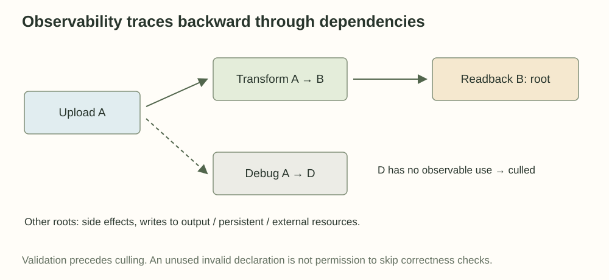
| Declaration | Why it keeps a writer live | How to reason about the example |
|---|---|---|
FArdaDependencyNodeDesc::mbSideEffect | The operation has an observable effect beyond a consumed graph output. | A readback operation must preserve the request that delivers its result outside GPU graph dataflow. |
FArdaDependencyResourceDesc::mbOutput | The resource is explicitly retained as a graph result. | Keeping B makes its writer a root even without a following graph reader. |
mbPersistent | A write changes storage retained beyond the transient result. | Updating history must survive even if no node reads the new history this frame. |
IsExternal() | A write affects externally owned storage. | Writing an imported presentation target cannot disappear because it has no local consumer. |
FArdaDependencyNode::mbCulled | An analysis result marking absence from the live ancestor set. | Debug D remains inspectable but does not become an executable dispatch. |
The distinction matters for resource imports. Reading an imported texture does not alone make that reader a root. Writing it does. Likewise, naming an operation “Present” or “Debug” does not determine its liveness; the declarations do. An unnecessary external write survives because the graph treats that effect as observable. An ordinary temporary output disappears when it leads nowhere. This gives library authors a strong responsibility: declare side effects precisely, since an overly broad side-effect marker keeps an otherwise disposable branch alive.
The current traversal follows every incoming edge, including explicit ordering and overwrite hazards. It is conservative reachability, not a general dead-store-elimination algorithm. If an earlier write is connected to a later live overwrite through a hazard edge, the backward walk may retain it even when a more sophisticated value analysis could prove its stored contents unused. This is an implementation boundary worth remembering when interpreting a culled-node count: the compiler removes unreachable work under its graph semantics, rather than promising to discover every redundant computation.
Validity also precedes culling in the default program. A debug branch that reads unproduced bytes is rejected before the culler can mark it dead. Admission checks similarly preserve requirements of authored and expanded operations. One cannot use an unused branch as a container for malformed declarations or unsupported implementations and assume it will vanish before checking. The useful discipline is to omit optional work when constructing a graph, and use culling to remove valid work whose outputs are unobserved.
Bind the semantic graph to an implementation the target can run
After preprocessing, upload, compute and readback have clear logical effects. The next question is whether their selected implementations can run on the target device, and what private execution state they need. A compute implementation may require a shader, a binding layout or device-specific preparation. A CUDA implementation may require a particular launch mode and architecture. A ray-tracing operation may require acceleration structures and shader tables. A graph topology alone cannot answer those questions.
The compiler first checks external resource and value slots, rebinds external parameters, validates required features and revalidates compilation parameters. An external slot without a binding is a compilation error even if the abstract graph could be inspected before binding it. Node preparation then invokes each registered definition's mPrepare with the current device and frozen public inputs. The resulting private parameter instance is described again to obtain its device-prepared declarations. Source: compiler preparation and snapshot construction.
| Type | Relevant information | Why there are two representations |
|---|---|---|
FArdaDependencyNode | mDefinition, frozen mSourceParameters, attachment order, outputs, transformed mDesc, stage provenance and culling annotation. | Preserves what the authored operation means, including identities needed by transformations and revision handling. |
FArdaInductorNodeState | mParameters for the prepared private schema; mDesc containing prepared shaders, bindings and effects; mGraphicsStageParameters for draw-local stage instances. | Retains what executing that operation on this target needs without replacing the public authoring schema. |
FArdaInductorSubgraphAdmission | The removed interface's name, definition, frozen parameters, requirements and archived external references. | Expansion does not erase the selected composite operation's admission contract. |
This is not an excuse for preparation to replace the graph's meaning. InitializeArdaInductorNodes preserves the semantic description produced by preprocessing and rehydrates native references through declaration provenance. For example, an assembled graphics consumer can retain its transformed access declarations while obtaining the prepared shader and layout objects from its original stage providers. Missing provenance is an error. Each draw receives cloned mutable stage parameter instances; immutable preparation can be shared without making two draws share the same mutable recording state. Source: preparation, provenance and semantic preservation.
Requirements are explicit data. FArdaDependencyNodeRequirements combines portable graphics capabilities and limits with CUDA requirements and named environment predicates. All conditions are conjunctive: satisfying one does not compensate for another. Requirements can depend on frozen public parameters, which allows a selected implementation to express a precise admission contract for the requested operation.
| Member family | Meaning | Example consequence |
|---|---|---|
mFeatures | Portable RHI features and limits. | A mesh or ray pipeline must have the corresponding supported feature set. |
mbRequireCuda, surface flags | A qualified CUDA execution mode, optionally with ordinary or layered surface access. | A CUDA texture implementation cannot be admitted merely because graphics compute exists. |
mMinCudaComputeCapability, thread/shared-memory limits | Minimum architecture and per-block capacities. | A kernel requiring more shared memory than available is rejected before execution. |
mAllowedCudaLaunchModes | An optional accepted set of CUDA launch modes. | The current launch path must be one the implementation explicitly accepts. |
mEnvironment | Named, read-only checks for driver or library constraints absent from portable capability fields. | A failed library condition retains its name in the diagnostic. |
Validate() / Check(Device) | Validate the declaration's shape, then test admission against an actual device. | Offline declaration validity and target executability are different results. |
The environment callback contract forbids submitting work, allocating GPU resources or mutating external state. Feature checking is admission, not a hidden execution phase. The implementation also infers requirements from the chosen node domain, pipeline families, shader bindings and resource states. A native compute operation does not inherently require an independent compute queue, because it may run on the graphics queue. A selected compute alternative is checked as compute rather than inheriting the CUDA implementation's domain. Source: requirement contract.
Checking occurs at more than one boundary because preprocessing and preparation can expose requirements absent from the initial interface. The compiler revisits retained subgraph admissions, authored compiler sources and current nodes; after preparation it validates the resulting description, and final result validation checks again. Device-independent analysis does not assert support for inferred native features. In particular, a plan built without a device is not evidence that a GPU can execute it. The standalone tests demonstrate the distinction by successfully retaining a compiled analysis result and then rejecting execution when no device exists. Source: repeated admission checks. Source: plan lifetime and device-free execution test.
Assemble a pipeline without confusing it with the work graph
The running computation needs one compute shader and compatible resource bindings. A draw needs several shader stages plus rasterization, blend, depth and attachment settings. These are pipeline composition problems. They are related to dependency scheduling because a graph node uses the resulting pipeline, but they are not the same problem. The edge from upload to compute communicates data availability; it does not contribute a shader stage.
Arda represents pipeline composition with contributions and requests. A contribution supplies a retained shader, layouts, optional fixed settings and, where needed, group or ray-export identity. A request asks for a named pipeline slot of a particular family. Inference combines eligible contributions into a normalized configuration and validates that the result is complete and consistent. The compiler supports configuration families for compute, traditional graphics, meshlet graphics, ray tracing and work graphs. This family list describes pipeline representations, not a claim that every selected backend supports each one.
| Type | What it provides | Use in a concrete operation |
|---|---|---|
FArdaInductorPipelineContribution | A shader, logical group, global/local layouts, optional settings, ray export/hit-group names and declaration provenance. | The compute operation contributes its compute shader; a pixel stage contributes its fragment shader and bindings. |
FArdaInductorPipelineRequest | A consumer-local slot, terminal node ID, family, optional group, configuration and generated layouts. | Request the compute pipeline in slot default. |
FArdaInductorPipelineNode | A projection containing node ID, dependencies, contributions and pipeline-family boundaries. | Lets the inference helper traverse a composition graph without requiring the whole scheduling IR. |
FArdaInductorPipelineConfiguration | mKind selects the compute, graphics, meshlet, ray-tracing or work-graph initializer. | Stores compute shader/layout settings or a draw's shader and fixed-function state. |
FArdaInductorPipelinePattern | Normalized configuration, deterministic semantic key and contributing IDs for diagnostics. | Identifies equivalent pipeline semantics independently of the debug name of the compute node. |
FArdaInductorResolvedPipeline | A concrete semantic key and the selected typed native pipeline reference. | The native compute or graphics pipeline eventually bound while recording work. |
The inference helper first validates the complete referenced ancestry for missing IDs and cycles. It then collects stages under narrower rules: an upstream consumer requesting the same pipeline family forms a boundary. Its shaders belong to its own operation and must not leak into the next operation. Named groups disambiguate independent eligible branches; multiple reachable groups without an explicit selection fail. Conflicting shader stages, settings, exports or layouts also fail instead of making insertion order decide the answer. Source: composition traversal and normalization.
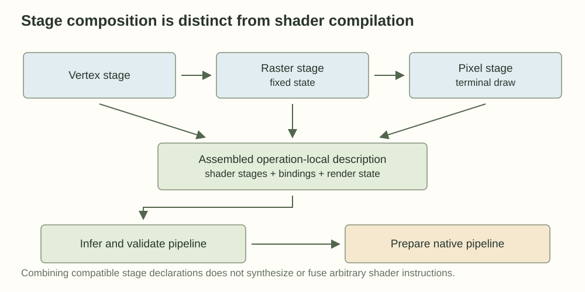
There are two levels to keep straight when reading the current code. The reusable helper accepts a topology projection with dependency ancestry. The default FArdaInferPipelinesRule, however, validates each live node using that node's already assembled contributions. Graphics and ray stage relationships have been lowered earlier by preprocessing and preparation. It is therefore misleading to draw this default pass as walking through arbitrary upstream compute or copy operations and fusing all their shaders into a pipeline. Its input is the prepared operation's composition. Source: the default inference rule.
The stable key describes pipeline semantics. It excludes graph node IDs, slot/group labels and debug names, while including shader content identities and relevant settings. This allows differently named graph operations to identify the same pipeline configuration. Framebuffer-derived formats and sample counts are completed when the native cache resolves a graphics or meshlet pipeline. A pattern key is consequently an identity for the inferred configuration, not a promise that every native object already exists at this point. Source: pattern and resolved-pipeline contracts.
Finally, a structurally complete pipeline can still disagree with the graph's binding declarations. Shader contract validation compares the required schema and access permissions with the node's declared resources and layouts. For the A-to-B computation, the input resource must satisfy the shader's read contract and B must satisfy its write contract. The compiler cannot safely schedule an operation as read-only if its shader contract exposes a write. Pipeline inference therefore joins the shader-facing description to the resource-facing description before the schedule is accepted. It does not turn shader source code into machine code itself; it composes and validates prepared shader and pipeline objects. Source: shader contract validation.
Produce a complete plan whose parts agree
At this point the compiler knows the live operations, their dependencies and their prepared execution descriptions. It can choose an order, assign storage and place work on execution domains. Those decisions are coupled. A different order changes resource lifetimes. Memory reuse can add ordering requirements. A batching decision changes the dispatch boundaries at which cross-queue synchronization can occur. A compile result is therefore a set of mutually consistent products, not just a topologically sorted list.
| Step | Rule | Result it establishes or refines |
|---|---|---|
| 1 | FArdaFlattenGraphRule | Topological live order and the separate culled-node list. |
| 2 | FArdaCheckRequiredFeaturesRule | Admission for the selected implementations and current device. |
| 3 | FArdaInferPipelinesRule | Valid pipeline composition and shader contracts. |
| 4 | FArdaSearchOrderRule | A legal order chosen by the configured scheduling search. |
| 5 | FArdaPlanMemoryRule | An allocation plan tied to that order, with any memory dependencies. |
| 6 | FArdaAssignQueuesRule | A native queue assignment aligned with the execution-order entries. |
| 7 | FArdaBatchCudaRule | Contiguous executable CUDA runs. |
| 8 | FArdaBatchPipelinesRule | Compatible executable recording batches. |
| 9 | FArdaMergeDrawInstancesRule | Eligible draw groups inside those batches. |
| 10 | FArdaFlattenDispatchesRule | Dispatch IDs, queue lists and CUDA-stream lists. |
| 11 | FArdaResolveFencesRule | Dispatch dependencies and required cross-domain fence edges. |
The important reading of this list is causal within compilation: downstream products depend on earlier choices. The implementation validates those data relationships rather than requiring an exact fixed count of rule objects. Configured instances execute in list order and may repeat. Optional rules can be omitted when the remaining program produces a valid result. A custom ordering rule cannot omit a live dependency, and changing the order after planning memory requires rebuilding the memory plan. The rule system permits replacement strategies while retaining a common definition of correctness. Source: default compiler program. Source: configurable-rule tests.
| Type | Contract | Where extension belongs |
|---|---|---|
FArdaGraphRule | A stable diagnostic name and immutable retained configuration. Adaptive scheduling is disabled unless the rule opts in. | Shared identity and configuration policy for both categories of rule. |
FArdaGraphPreprocessRule | Apply(FArdaInductorGraph&) may transform the private graph. | Expand an operation or rewrite declarations before semantic validation. |
FArdaGraphCompileRule | Apply(const FArdaInductorGraph&, FArdaInductorCompileResult&) refines an unpublished result. | Replace a scheduling, memory, queue or batching policy while preserving the input graph. |
FArdaInductorRuleSet | mPreprocessRules and mCompileRules hold ordered shared pointers to const rule instances. | Select the concrete compiler program during graph setup. |
For example, a renderer experimenting with a different scheduling objective can replace the ordering rule, then keep memory planning, queue assignment and dispatch lowering downstream. A structural transformation belongs earlier: it changes the graph the scheduler is allowed to arrange. The rule instance itself is retained as immutable configuration; temporary search state belongs in a local variable or the pending result. Rule identity and list order participate in revision caching, so mutating a rule through an external alias would also undermine reuse assumptions. These are small interfaces, but their ownership and ordering contracts are what make modularity operational. Source: shared rule contract. Source: rule ownership and revision identity. Source: transformation interface. Source: compilation interface.
| Product | Fields | What the consumer can conclude |
|---|---|---|
| Retained input and preparation | mGraph, mNodes, mSubgraphAdmissions, mExecution | The plan retains the frozen input, node execution state, admission contracts and opaque device/runtime state it needs. |
| Selected work | mExecutionOrder, mCulledNodes | Every topology node is accounted for; live dependencies precede consumers. |
| Allocation proof | mMemoryPlan, mAllocationOrder, mMemoryDependencies | The allocation assumptions and alias ordering belong to this exact selected order. |
| Recording groups | mCudaBatches, mPipelineBatches, mInstancedDraws | Work has been partitioned under compatibility and hazard constraints. |
| Submission structure | mDispatches, mQueues, mQueueDispatches, mCudaStreams | Executable groups have dispatch identities and an ordered queue/stream placement. |
| Synchronization structure | mDispatchDependencies, mFences | The runtime knows required dispatch ordering and which edges cross execution domains. |
| Diagnostics | Byte counts, search counts, estimated cost, search completion/exhaustion flags, mStatus, mRevision | The reader can inspect the selected model and search effort; byte counts are accounting, not proof of successful native allocation. |
These fields deliberately distinguish work from submission. A declaration-only node can participate in semantic ordering without becoming a command dispatch. FArdaInductorDispatch groups executable node handles and records a native queue plus a CUDA-stream marker. FArdaInductorFence contains producer and consumer dispatch IDs, not a native fence object or timeline value. The runtime resolves those logical identities when submitting actual work. The current flattening implementation places CUDA dispatches on one framework stream; the existence of a vector of streams does not imply that multiple CUDA streams are presently scheduled. Source: result, dispatch and fence types.
For upload A, compute A-to-B and readback B, flattening may produce three distinct dispatches. Fence resolution first maps nodes to dispatches, then carries topology and memory dependencies into that dispatch graph. It walks through declaration nodes that have no dispatch of their own. It also chains dispatches on each queue or CUDA stream. Only dependencies crossing queue or stream identities become entries in mFences; same-domain order still exists in mDispatchDependencies. Thus “no fence entry” does not mean “no dependency.” Source: dispatch flattening and fence resolution.
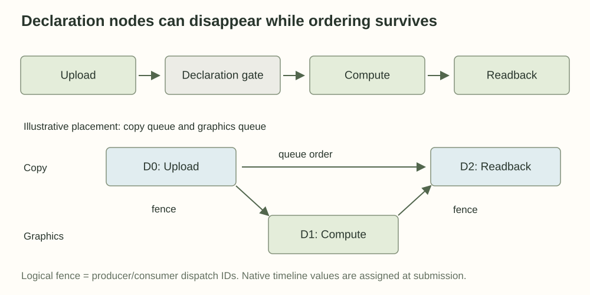
Before returning success, ValidateCompiledResult checks the assembled plan. Live and culled handles must form a complete, unique partition; every live predecessor must appear earlier. Memory must be budget-accepted, tied to the current order and frame count, and consistent with concrete resource usage. Memory alias dependencies must match the plan. Queue assignments, CUDA runs, pipeline batches, instance groups and dispatch contents must agree. Finally, every required dispatch dependency must be present and every cross-domain dependency must have a fence. A custom strategy is free to be more conservative, but not to omit a required ordering edge or batch across an unsafe boundary. Source: compiled-result invariants.
Only then does the compiler assign the result revision, retain the graph snapshot, and return the successful result. Rule errors receive the responsible rule's name; thrown exceptions become failure statuses and the unpublished result is discarded. This makes the compiler boundary useful to both renderer and tools: the renderer receives a coherent plan, while a graph inspector can show exactly what was culled, ordered, allocated and synchronized. The next step is to examine how scheduling and memory planning choose among the legal possibilities that this semantic analysis has established.
Compile a model into an explicit GPU program
The graph compiler discussed so far starts with declared operations. A model compiler starts earlier: it receives tensor computations and must produce the kernels that perform them. Arda connects these stages through .ardagpu packages. The offline exporter specializes a supported model into device code and an explicit execution recipe; at runtime, that recipe becomes ordinary operations in the same graph as the renderer. Our transform can therefore come from a model compiler without giving that compiler ownership of the application's entire GPU frame.
Two similarly named systems must be distinguished here. ArdaInductor plans Arda's dependency graph. The current model-export route does not invoke PyTorch's TorchInductor or torch.compile. It captures through strict torch.export, writes ONNX, invokes the pinned IREE compiler, and extracts a restricted static program from IREE's HAL representation. The distinction is visible in the actual calls, not inferred from either project's name. [packages-capture] [packages-compile-route]
| Stage | Input and output | Responsibility |
|---|---|---|
| Strict model capture | Python module plus example arguments → functional captured program and ONNX. | Freeze the supported call signature, shapes and scalar configuration; reject unsupported stateful behavior. |
| IREE plus Arda's offline adapter | ONNX/MLIR → embedded PTX, constants, tensor interfaces and dispatch/fill/copy recipe. | Compile tensor computation and reduce supported host orchestration to explicit data. |
| ArdaInductor | Package operations combined with the surrounding graph → executable graph plan. | Resolve resource dependencies and prepare execution alongside application-authored work. |
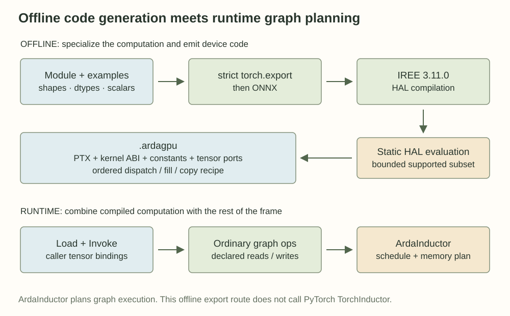
arda.export first binds the supplied arguments to model.forward. Tensor leaves become named ports; ordinary scalar leaves become frozen configuration. Nested tuples, lists and string-keyed mappings can be flattened, but the tensor examples must have nonempty positive static dimensions, dense contiguous layout and supported dtypes. Separate input ports cannot share the same underlying storage. These checks happen before compilation so an ambiguous call does not become a partially exported artifact. [packages-input-contract] [packages-input-binding]
Capture operates on an independent deep copy moved to CPU evaluation mode. It uses strict=True, functionalizes the program, rejects output-signature mutations of inputs or model state, and rejects seeded random operations without explicit state. It compares the captured program's outputs with an independent eager execution before exporting ONNX. A tensor-dependent Python branch such as if value.sum().item() > 0 fails instead of silently choosing the branch taken by one example. The repository tests that rejection and verifies that the caller's model, input and RNG state remain intact. [packages-capture] [packages-rejection-tests]
The following example adapts the tested frozen-argument fixture. Its scalar strength is specialized to 2; matrix and bias remain runtime tensor inputs. Supplying a bias of 0.5 makes the result our running B = 2*A + 1. This is an export invocation for the repository's model-export Python environment, not a claim that every PyTorch module is exportable. [packages-affine-test]
import torch
import arda
class Affine(torch.nn.Module):
def forward(self, matrix, strength, *, bias, shift=0.5):
return matrix * strength + bias + shift
artifact = arda.export(
Affine(),
(torch.arange(8, dtype=torch.float32).reshape(2, 4), 2.0),
"exported/affine",
kwargs={"bias": torch.full((4,), 0.5)},
input_names=["image", "offset"],
output_names=["prediction"],
target_archs=["sm_80"],
)
package_path = artifact.packages["sm_80"]Changing the bytes of the image input at runtime does not require another export. Changing its shape to [4,4], changing its dtype, or asking this captured call to use a different frozen strength changes the specialized contract. If a parameter must vary as runtime data, expose it through a supported tensor input instead of assuming an ordinary Python scalar becomes a live application uniform. This distinction is what turns the captured call into a closed, reusable program.
The next boundary is equally strict. compile_model checks for IREE version 3.11.0, imports ONNX, validates precision, and compiles to HAL with indirect command buffers and HAL memoization disabled. StaticHalExporter evaluates the supported host-side operations and records the resulting commands. This evaluator has bounded step and recursion limits and rejects unknown operations. It is not carrying a general Python or IREE virtual machine into the application. The supported host calculations must resolve during export. [packages-compile-route] [packages-static-evaluator] [packages-unknown-operations]
The adapter reads CUDA executable metadata for entry points, launch block dimensions, shared-memory requirements and argument bindings. It obtains PTX from the executable binary and checks that its actual target matches the requested architecture. The current exporter emits PTX; the C++ package transport also accepts cubin, which is a broader transport capability rather than an output promised by this adapter. Its emitted launch ABI uses 64-bit buffer arguments and 32-bit scalar constants in declared order. Metadata and PTX parameter widths are checked against one another. [packages-executable-metadata] [packages-transport-validation] [packages-runtime-load]
Precision and layout remain separate contracts. A tensor descriptor says how bytes represent elements; it does not quantize weights or select a fast arithmetic instruction. The public exporter supports the dtypes below and checks its target policy against inputs, parameters, outputs and observed internal dtypes. It does not silently cast them or substitute another target. FP8 capture additionally requires a compatible ONNX opset, and the adapter contains explicit conversion handling for the pinned compiler. These checks preserve numerical semantics; they are not throughput measurements. [packages-dtypes] [packages-export-contract]
| Export dtype | Bytes per element | Minimum SM threshold in the export policy |
|---|---|---|
| Float32 / Int32 | 4 / 4 | No extra dtype threshold; the requested target must still be in the exporter's supported list. |
| Float16 | 2 | 53; the current target list starts at 60. |
| BFloat16 | 2 | 80. |
| Float8 E4M3FN / E5M2 | 1 / 1 | 89. |
| Int8 | 1 | 61. |
Float16 and BFloat16 both occupy two bytes per element but describe different numerical encodings. Matching byte counts therefore cannot establish binding compatibility. The reference writer preserves BFloat16 as raw 16-bit storage and FP8 as raw 8-bit storage, and numerical comparison decodes those bits according to the declared dtype. A layout match, a precision match and a numerical tolerance check answer three separate questions. [packages-reference-storage] [packages-target-options]
A successful export produces per-target packages plus inspectable metadata, reference data and a manifest. Structural capture and package-closure checks are mandatory. Numerical replay on the local GPU is optional through verify=True; its recorded scope is that local device, not every deployment architecture. The package validator rejects unresolved external functions/globals and known device-runtime service requirements. The intended runtime dependency is Arda plus the CUDA driver, with no model-language interpreter required by this route. [packages-export-contract] [packages-transport-validation]
Turn the package back into ordinary graph operations
A package must carry more than a kernel binary. The binary says how one dispatch computes; the recipe says which dispatches run, what storage they reference, which constants exist and how tensor ports map into that storage. FArdaGraphPackage makes this complete description immutable after validation. Loading it is separate from invoking it: the same package can later be connected to different compatible buffers in different graph constructions. [packages-public-types]
| Record | Information it provides | Why the caller needs it |
|---|---|---|
| Embedded module and kernel definition | PTX/cubin, architecture/build identity, entry point and packed argument ABI. | Reconstruct a retained runtime node definition with explicit buffer access semantics. |
| Package buffer | Name, full backing extent and optional constant initializer. | Allocate internal/output storage or validate caller-owned backing storage. |
FArdaGraphPackageTensor | Name, package buffer index, role bits, tensor descriptor and mStorageByteSize. | Reflect the exact interface, including layout and backing padding beyond visible elements. |
FArdaGraphPackageBinding | A named caller-supplied FArdaGraphTensor. | Connect an ordinary graph buffer and layout to an input or optional supplied output. |
| Recipe command | Dispatch dimensions and arguments, fill pattern/range, or copy source/destination ranges. | Recreate the package's ordered work inside the caller's open edit. |
FArdaGraphPackageInvocation | Named input/output tensor views, including automatically allocated outputs. | Attach a readback or rendering consumer to the model result. |
The reader verifies the ARDAGPU magic and version, parses bounded records, requires complete input consumption, and validates references before registering definitions. Tensor layouts must fit their backing buffers; dispatch arguments must match the kernel ABI; copy regions cannot overlap; immutable checkpoint storage cannot also be a writable interface. The loader then retains immutable definitions from the registry. These structural checks catch malformed programs, but they do not sandbox the embedded GPU code: the package remains trusted executable content. [packages-runtime-validation] [packages-runtime-load] [packages-public-types]
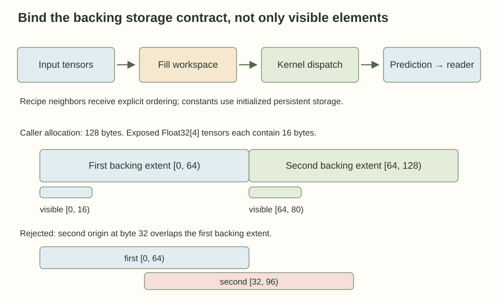
Invocation begins by validating names, dtype, dimensions, strides and byte origins against reflected ports. Every required input must be supplied. Omitted output and internal buffers are allocated through the graph; initialized buffers use the ordinary persistent initializer mechanism. The tensor's element count is not sufficient to size a supplied allocation. mStorageByteSize includes the package's full backing extent, which may include other views or compiler padding. [packages-runtime-binding]
The binding tests make this concrete. A package port exposes four Float32 elements, only sixteen visible bytes, but requires a sixty-four-byte backing buffer. A thirty-two-byte caller allocation is rejected. Two distinct package buffers cannot be mapped to overlapping sixty-four-byte extents of one caller buffer, even if the visible tensor elements do not overlap. Binding them at byte origins 0 and 64 in a 128-byte buffer succeeds. Conversely, aliases intentionally declared within one package buffer remain aliases. The runtime preserves the compiler's storage model instead of reconstructing a guess from tensor shapes. [packages-binding-tests]
For the affine example, the application supplies graph tensor views named image and offset. After successful invocation it retrieves prediction and uses its buffer and descriptor in subsequent graph work. The views must match the reflected Float32 layouts [2,4] and [4]; replacing the image view with Float16 storage is a type mismatch, not an implicit precision conversion. A graph packing or conversion operation must explicitly produce the required input representation.
The recipe expansion is intentionally visible in the implementation. Dispatch commands become Edit.Invoke calls on retained runtime definitions with logical buffer ranges and owned scalar values. In the current runtime, package fill and copy commands also become built-in CUDA kernel nodes. They do not call the general facade's native CopyTo. The implementation then calls Edit.Order(Previous, Operation) for each adjacent recipe command, preserving the exported order even when resource analysis might otherwise permit reordering. A package's internals therefore arrive as an ordered recipe, not as a promise of newly discovered internal parallelism. [packages-runtime-expansion]
There is a second conservative choice on the export side. IREE's mutable CUDA bindings identify read-only versus mutable buffers without providing an exact write footprint. The adapter describes mutable bindings as read/write and inserts zero-fill commands for newly allocated mutable arenas before their first use. This establishes defined contents for the whole declared range instead of making the graph believe a kernel definitely initializes bytes that its metadata cannot prove. Caller-owned inputs are excluded from that automatic initialization. [packages-executable-metadata]
After expansion, the package has no private scheduler running outside Arda. Its input producers, retained constants, kernel nodes and output consumers participate in the same construction. The application still commits the edit, compiles the graph and submits execution. Keeping the result or attaching a consumer makes its observability explicit. This is the useful integration boundary for a renderer: offline compilation chooses the tensor program's implementation, while the graph keeps ownership of how that implementation joins the rest of the frame.
Choosing when and where the work runs
A dependency graph answers which operations must precede others. It usually leaves several legal orders. Suppose our upload produces A, a compute operation reads A and produces B, and a readback consumes B. That chain has an unavoidable order. Add a second branch that renders an unrelated preview, however, and the compiler has a choice: finish the preview first, start the compute branch first, or put independent work on different GPU queues. The choice affects elapsed time, memory overlap, and the number of transitions between execution domains.
Arda makes that choice explicit in FArdaInductorCompileResult. Its execution order is an ordered list of semantic node handles, not yet a list of native command buffers. Queue assignments, memory dependencies, executable batches, and dispatches are separate products. This separation matters when inspecting a plan: an operation can remain in the dependency order as a declaration while generating no executable dispatch. A CUDA node has a native queue slot in the diagnostic array, but executes on its CUDA stream. The array's shape must not be mistaken for the execution domain. [Compile-result representation]
Information in FArdaInductorCompileResult | What it means | How to read our example |
|---|---|---|
mExecutionOrder, mCulledNodes | The retained topological order and operations omitted from execution. | Upload, compute, and readback survive because the readback is observable. |
mQueues | One native queue assignment per ordered node, including declarations and CUDA nodes. | The upload may use Copy; a short compute chain may remain on Graphics. |
mMemoryPlan, mAllocationOrder, mMemoryDependencies | An allocation proof for a particular order, plus ordering added to make reuse safe. | A scratch-buffer reuse edge can restrict otherwise independent branches. |
mPipelineBatches, mInstancedDraws, mCudaBatches | Distinct grouping decisions: shared native recording, candidate merged draws, and contiguous CUDA sequences. | Two compute nodes may share a recording; a producer/consumer hazard may split them. |
mDispatches, mDispatchDependencies, mFences | Executable groups and their logical synchronization relationships. | The compute dispatch depends on the upload dispatch across their queue boundary. |
mSchedulesExamined, mSearchStatesExamined, mbSearchComplete, mbSearchExhausted | Search effort and whether every legal order was examined by the current model. | A bounded search can succeed with a feasible plan while reporting an exhausted search budget. |
The search starts with deterministic node ordering and two greedy candidates. One favors critical-path cost and adjacent CUDA work; the other favors releasing storage and avoiding new live allocations. Bounded mode then tries local improvements and explores additional topological orders. Exhaustive mode removes the state limit, which can be very expensive as independent nodes multiply. Stable ordering is also available when predictable order matters more than optimization. “Complete” means complete for the implemented search, allocator, and cost model; it does not establish the fastest possible execution on a physical GPU. [Ordering rules] [Search implementation]
For each candidate, Arda plans memory, applies queue policy, and estimates finish times. A node starts after both its predecessors and the previous work on its assigned queue. The modeled makespan is the latest queue finish. The model adds a configured penalty for each transition between native and CUDA work, and auxiliary submission costs for aliased-image activation and retirement. Efficiency compares cost first and bytes second; Memory compares bytes first and cost second. These are estimates in cost-hint units, not measurements in milliseconds. In particular, the initial model uses native queue timelines and a CUDA handoff penalty; it is not a detailed simulation of independent CUDA streams or GPU resource contention. [Candidate evaluation]
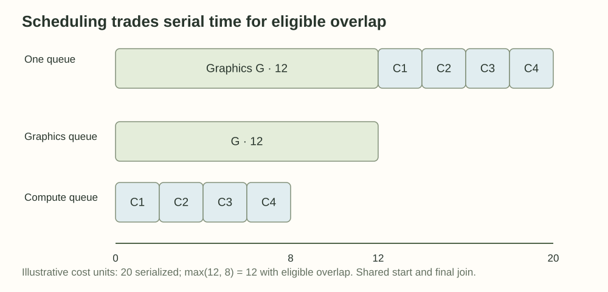
For an illustrative calculation, give the independent preview 12 cost units and a chain of four compute operations 2 units each. Serial placement costs 20; ideal overlap costs 12 before other overheads. The default queue rule requires more than a Compute label: the queue and GPU waits must be supported, accessed states must be compatible, the chain must meet the configured minimum length, and sufficient independent graphics cost must exist before its join. The default thresholds are four nodes and four units of independent slack. Consequently our original single compute operation is not automatically moved to the async-compute queue. Nor does async placement promise a speedup: two queues may compete for the same shader cores or bandwidth. [Options and defaults] [Queue assignment]
The policy includes memory ordering when deciding whether work is independent. A preview that used to overlap a compute chain may lose that independence after an aliasing edge is added. Copy placement similarly requires copy-compatible states; acceleration-structure storage currently keeps affected compute work on Graphics because the required cross-family ownership API is absent. Custom queue rules are validated and cannot silently replace the selected order or remove memory dependencies. Queue assignment is therefore a constrained compiler decision, not a hint that overrides correctness.
Memory reuse is a proof about time
A and B are logical resources: names and descriptions used to express dataflow. Execution needs physical allocations. If A and B are both alive during the compute operation, they cannot occupy the same bytes. A later temporary C may reuse A's storage after every reader of A has finished. This is the central opportunity behind transient allocation: the physical memory footprint can be smaller than the sum of all logical resources, provided reuse preserves every lifetime.
There are two meanings of “after.” A node can appear later in a printed schedule without executing after another node on a different GPU queue. Arda's allocator receives both first/last positions and a happens-before query over the dependency topology. The scheduler records all resource users as lifetime evidence. If the planner may not add ordering between otherwise independent operations, reuse requires proof from existing dependencies. If the policy permits trading parallelism for memory, the planner can request additional producer-to-consumer edges that make the proposed storage reuse safe. This makes work execute sequentially; it is unrelated to serializing a graph into an archive. Those edges subsequently constrain queue placement and dispatch synchronization. [Lifetime construction and alias edges]
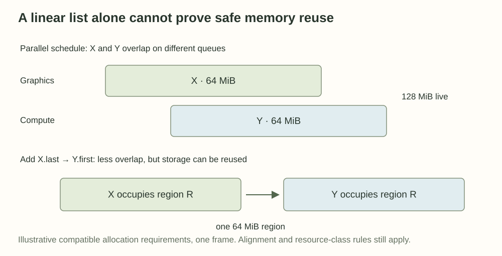
Consider two independent scratch buffers, X and Y, each requiring 64 MiB after native alignment. With one frame and no ordering between their users, the parallel plan needs 128 MiB. A plan that waits for X's last user before starting Y's first user may use one 64 MiB region. This example assumes compatible allocation requirements and ignores other storage. It shows why minimizing memory can make a frame slower, and why an efficiency search under a hard cap evaluates both parallel and serialized alternatives when possible. A generous budget should not force the smaller but slower plan. [Budget-aware candidate evaluation]
| Type | Information it provides | Why the compiler needs it |
|---|---|---|
FArdaMemoryRequest | Dense logical identifier, buffer/texture/acceleration-structure kind, descriptors, imported object, persistent flag, native size/alignment/type requirements, first and last uses, and heap-placement eligibility. | A byte count alone cannot establish compatibility or determine when storage may be overwritten. |
FArdaMemorySlot, FArdaMemoryHeap | Resources sharing a slot, capacity, heap identity and offset; heap description, resource membership, and alignment. | They describe the placement selected for logical values. |
FArdaMemoryAliasEdge, FArdaMemoryAliasActivation | Ordering required for reuse; the incoming occupant, activation consumer, and previous occupants. | They turn a packing decision into executable synchronization and resource-lifetime boundaries. |
FArdaMemoryPlan | Requests, placements, alias edges, activation records, frame count, owned/transient/persistent/external/workspace totals, and budget acceptance. | It is the allocation contract. A diagnostic plan can exist even when its budget is rejected. |
FArdaMemoryResources | Actual retained RHI resources and heaps, indexed by the same logical identifier domain. | It is the materialized pool used to resolve A or B into a GPU object. |
DescribeArdaMemory queries native requirements without allocating; PlanArdaMemory makes a deterministic plan; MaterializeArdaMemory creates and verifies the physical resources. Device-independent compilation can estimate logical sizes, but a hard VRAM cap requires a device and native requirements. mAllocatedBytes in the compile result reports the selected plan's accounted total; it is not proof that the allocations already exist. The runtime may still hold a pending plan until first submission. [Memory API] [Request preparation] [Materialization]
Budget accounting deliberately includes memory that culling does not release. Imported objects are retained even if their users disappear from the executed schedule. Persistent storage and kept outputs do not become ordinary short-lived scratch just because their last scheduled reader is early. Retained adapter workspace is charged for authored nodes that still own it, while transient workspace becomes a synthetic resource with an operation lifetime. CUDA-accessed resources opt out of heap placement in the current implementation. The native planner also documents committed-storage restrictions for persistent, CPU-visible, multisampled, render-target, and depth-target storage. “Arda supports aliasing” should therefore never be read as “every texture can alias every other texture.” [Placement restrictions] [Retained and transient storage]
Frames in flight multiply the transient part. For an illustrative plan with 16 MiB of imports, 8 MiB of persistent storage, and 24 MiB of transient storage per frame, two frame pools account for 72 MiB before any additional adapter workspace: 16 + 8 + 2 × 24. Imports and persistent objects are shared; transient pools are independent. Reusing a cached allocation does not make its live capacity free. The distinction between total accounted bytes, peak live logical bytes, and aliased bytes is useful when comparing schedules: the numbers answer different questions and need not match. [Plan accounting]
Placed images have an additional lifecycle. Lowering inserts activation before use and retirement after all actual users, then orders the next occupant after the prior retirement. These are real boundary operations, and they can split batches and add submissions. The compiler charges for them in its cost estimate. Safe reuse therefore reaches all the way from logical liveness, through the allocator, into command submission; it cannot be implemented as a local free-list optimization that ignores the schedule. [Image lifetime lowering]
Turning many operations into fewer execution groups
A legal schedule can still spend too much time creating command lists or crossing between native graphics and CUDA. Arda groups work at several levels, but those groups do different jobs. A pipeline batch lets compatible native operations share recording. A CUDA batch keeps a contiguous sequence together in the framework's CUDA execution machinery. An instancing group is a stronger proposal to replace several traditional draws with one draw. A dispatch is the executable group that the later synchronization rules address.
For our compute chain, imagine that two operations use the same pipeline but write different output buffers. They may be compatible for one native recording. Now change the second operation to read the first operation's output. A resource dependency remains, and a transition or storage ordering barrier may be needed between the operations. The batching rule must retain that boundary. Matching shader identity alone is not sufficient permission to fuse execution. [Native batching rules]
| Representation | What is grouped | What remains separate |
|---|---|---|
mPipelineBatches | Consecutive compatible executable operations; native batches share one recording. | Each operation still contributes its own work. This is not shader instruction fusion. |
mCudaBatches | Contiguous executable CUDA nodes, ignoring pure declarations. | An intervening executable native node ends the run. |
mInstancedDraws | Candidate consecutive traditional draws inside one native batch. | Native state and contiguous instance ranges still require recording-time verification. |
FArdaInductorDispatch | A vector of node handles with a native queue and a CUDA-stream marker. | Semantic node handles remain distinct from dispatch indices and eventual submission tokens. |
FArdaInductorFence | Producer and consumer dispatch indices for a logical cross-domain edge. | The runtime must resolve that edge to actual submission/timeline synchronization. |
Native batch identity is derived from pipeline configuration, requested slots, and render-target formats and sample counts. The queue must also match. Memory-reuse boundaries split batches. Shared reads may remain together, while overlapping storage writes and changes in resource state split them. Ordered framebuffer writes in the appropriate target states have a special allowance because they need no intervening transition or UAV barrier. The buffer-range logic is conservative: it accumulates a covered interval, so correctness takes precedence over finding every possible batching opportunity. [Compatibility and hazard checks]
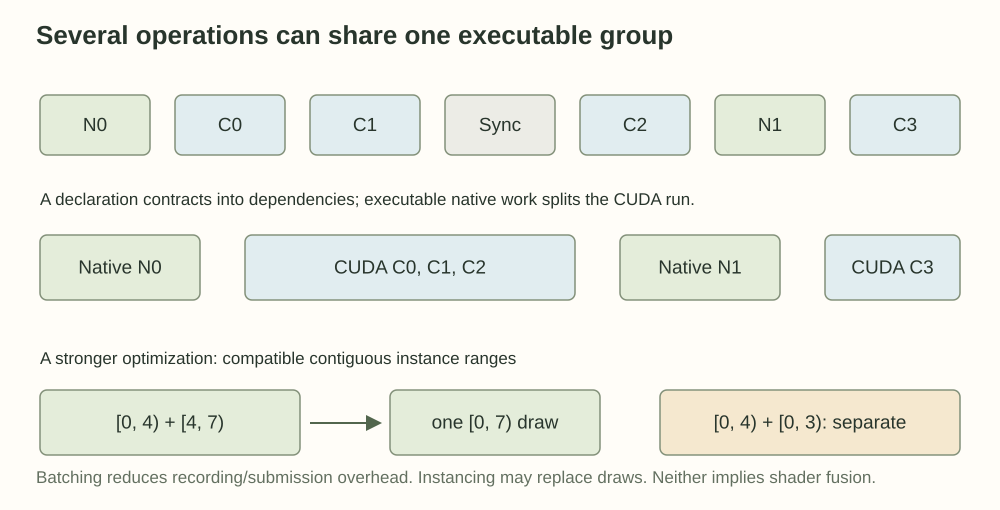
CUDA grouping scans the selected order. A pure synchronization declaration or pipeline-stage declaration neither executes nor splits a CUDA run; an executable native operation does split it. The current dispatch representation emits one framework CUDA stream, numbered zero. The native queue array does not turn CUDA work into native compute work, and the compiler does not silently translate an arbitrary native node into a CUDA kernel. Where an operation offers alternatives, an admitted implementation must already have been selected before this execution grouping is meaningful. [CUDA run construction] [Dispatch flattening]
That separation also affects resource contracts. A prepared CUDA operand is checked against the current node's declared accesses, including whether it reads or writes, the UAV state, and complete byte-range coverage. Texture surfaces expose all array layers at a selected mip, so a declaration cropped to some layers does not authorize the full surface. An adapter cannot obtain safe scheduling merely by accepting an RHI resource pointer; it must accurately declare the footprint used by its CUDA operation. [CUDA access validation]
Instancing is stricter still. Each participating graphics stage must explicitly allow contiguous-instance merging. The compile rule rejects cases such as extra storage writes, workspace ownership, shader tables, bindless tables, and descriptor-index values patched per node. Compatible logical bindings and attachments establish a candidate group. At recording time Arda compares actual pipeline, framebuffer, binding sets, geometry buffers, draw parameters, viewport, and scissor state. It also checks that one draw's ending instance equals the next draw's starting instance, and checks integer bounds. If any condition fails, the original draws remain. [Compile-time candidates] [Native merge predicate]
For example, identical geometry drawing instances [0,4) and [4,7) can become one seven-instance draw if all other conditions hold. Two draws that both start at instance zero cannot be merged by simply adding their counts: that would change the instance IDs observed by the shader. Arda's tests explicitly preserve reset and noncontiguous ranges. This is a useful design principle for later renderer work: a batching optimization must prove preservation of the shader-visible contract, not just similarity of command state. [Instancing regression coverage]
Finally, dispatch flattening requires batches to partition executable nodes exactly once in schedule order. Fence resolution contracts dependencies through declaration-only nodes, includes aliasing dependencies, and chains each native queue and CUDA stream. It records logical fences when producer and consumer cross queue or stream domains. The result is a smaller execution graph whose vertices are submissions-to-be, while retaining the semantic graph's ordering requirements. [Dispatch and fence rules]
From a compiled schedule to native commands
The compiler's schedule still talks about A and B. A particular frame must bind those logical resources to physical RHI objects, create the relevant pipelines and bindings, and turn each executable group into recording work. Arda performs that transition through a private FArdaInductorCommandProgram. Its contract is deliberately narrower than the authoring graph: it does not select schedules, allocate resources, cull operations, or expose another authoring language. It holds already-bound resources and a finalized sequence of commands. [Private command-program contract]
| Type | Information supplied | Role in upload → compute → readback |
|---|---|---|
FArdaInductorFrame | One frame slot's materialized memory, lowered program, bindings, timers, CUDA caches, and active receipt. | Selects the physical A and B belonging to this reusable slot. |
FArdaInductorCommandProgram | Bound physical resources, appended recording functions, accepted dependencies, and final command plan. | Contains upload, compute, and readback work plus generated boundaries. |
FArdaInductorCommandState | Producer commands, required resource states, lowered transitions, native queue, and sentinel status. | The compute command requires A readable and B writable. |
FArdaInductorCommandPlan | Prologue, epilogue, command order, and cross-queue dependencies. | Places reusable entry/exit state around the useful operations. |
FArdaInductorPassContext | The current command, declared resource resolution, command list, queue, and first reported error. | Provides the recording callback with this command's physical resources. |
FArdaGraphExecutionResult | Execution status, accepted submission counts, last queue tokens, waits, alias barriers, draw merging, and optional state-conformance evidence. | Explains whether the frame actually submitted and how it was synchronized. |
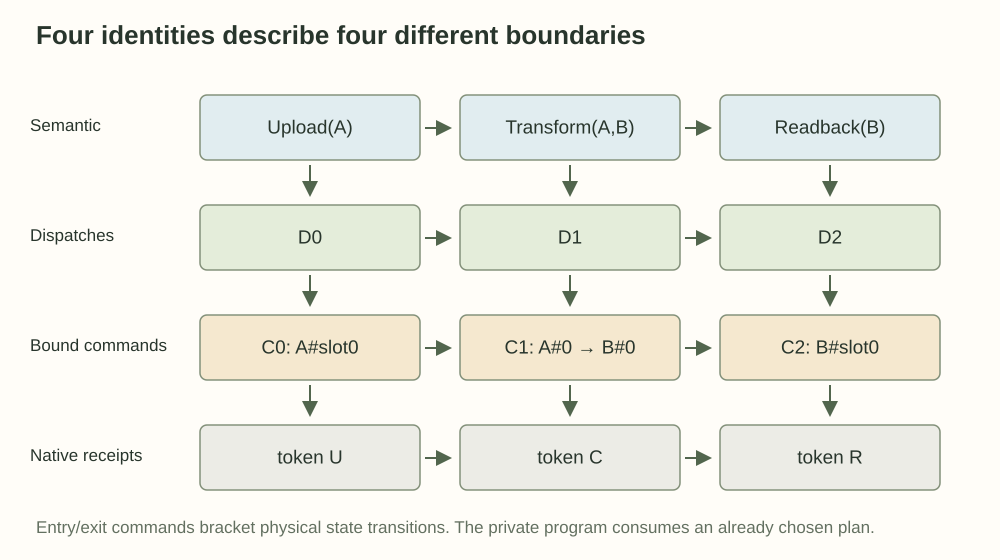
Lowering maps each compiled dispatch to a command and collects its resource accesses. Missing live allocations or stale handles are errors. It also inserts the image activation and retirement operations discussed earlier. Pipeline-stage-only declarations and pure synchronization declarations produce no physical work; their ordering has already been contracted into executable dependencies. CUDA commands and commands touching acceleration structures record at submission time. For acceleration structures this ensures recording observes lifecycle state published by accepted build or copy submissions. Ordinary commands can be prepared earlier. [Frame lowering] [Frame preparation] [Frame storage]
A dependency and a barrier answer different questions. The dependency says that the upload must finish before the compute reads A. A state transition establishes how the resource is used, for example from copy destination to shader-readable storage. A UAV barrier can order storage accesses even when the state remains UAV. Queue ownership records which queue currently controls a resource's use; a queue transfer performs the synchronized handoff to another queue. Aliasing activation establishes which logical occupant is currently valid over reused memory. All may be necessary for one logical edge; none is a universal replacement for the others.
Command-program finalization merges each command's declared requirements and emits state-continuous transitions. Textures are tracked by subresource cells, including depth/stencil plane distinctions; buffers have one state slot for the whole buffer even though dependency and overlap analysis uses byte ranges. Compatible read states can merge, whereas conflicting writable states are rejected. The epilogue restores the resources' reusable exit state. That state is the bound entry state in this representation, allowing the same program to execute again. [Barrier lowering and finalization]
Physical lowering then follows actual allocation identities and queue history. A resource changing queues produces a producer release, consumer acquire, and execution dependency; the transfer proceeds through Common state. Equal before/after state does not remove the need for ownership transfer. Frame-boundary finalization deliberately retains equal-state exit records so ownership can return correctly. For buffer UAV accesses, runtime transition construction checks outstanding byte ranges and writes to avoid treating every disjoint access as the same hazard, while preserving first-import and sentinel ordering. [Physical transition history] [Reusable frame boundary]
Recording and execution have different parallelism. Independent command lists can be recorded concurrently on CPU threads, bounded by execution options, with each worker writing its own result slot. Submission order remains deterministic. Before submitting a cross-queue consumer, the CPU calls QueueWait to enqueue a GPU-side dependency on the producer's submission token. In Arda's D3D12 and Vulkan backends, the consumer queue waits while the CPU can continue submitting work. Multiple dependencies on one producer queue can reduce to its latest required token. This differs from a CPU completion wait such as waiting to reuse an occupied frame slot. The generic provider fallback may instead block the host; asynchronous queue selection requires GPU-wait support. [D3D12 queue wait] [Vulkan queue wait] [Provider fallback] These tokens identify actual accepted work and are not semantic node indices. Generated entry, exit, and ownership operations also explain why the execution report can contain more commands than the authoring graph. [Recording and submission]
Optional state-conformance records compare the graph's expected state with independently observed RHI facade, backend, native encoding, and queue ownership. They are useful for finding a broken abstraction boundary: a correct-looking dependency graph can still fail if the backend encodes a transition incorrectly. They complement output-value tests rather than replacing them. For our example, B containing the expected numbers demonstrates useful computation; consistent transition records demonstrate that the intervening resource-state protocol agrees across layers. [Execution diagnostics]
Submitting a frame is different from completing it
A standalone compiled plan can be handed to FArdaGraphExecutor, which owns execution independently of the graph that supplied the declarations. The retained compiled input allows the original graph and preprocessing result to go out of scope. This is an ownership boundary, not permission to copy a live execution machine: construction atomically claims the shared execution state, and a second executor made from a copied compile result is rejected. Compile again when independent execution resources are required. The public executor is itself noncopyable. [Executor ownership] [Source-lifetime regression]
| Type or operation | What it owns or reports | Practical consequence |
|---|---|---|
FArdaInductorExecutionState | Device, persistent resources, mutable runtime, pending memory plan, timing accumulator, cost overrides, caches, and tuning job. | Mutable device products belong to a compilation, separately from authored topology. |
FArdaGraphExecutor | An execution facade retaining the compiled plan and construction status. | Always check GetStatus(); copied plans cannot claim a second owner. |
Submit() | A status plus an optional retained frame ticket. | A valid ticket can exist even when recording or later submission failed. |
FArdaDependencyFrameTicket | Shared receipt state with graph identity, frame sequence, execution report, completion tokens, readbacks, and timing. | The receipt survives frame-slot reuse and graph edits; it belongs to the originating executor or graph. |
IsComplete(), Wait() | Readiness polling; or retirement plus completed results and readback publication. | A ready poll does not itself publish the pending host readback vectors. |
Execute() | Submission followed by waiting when any valid ticket exists. | The simple synchronous path also retires accepted work from a failed partial submission. |
The table's ownership split is implemented directly in the execution-state and receipt records: the mutable pool belongs to the compilation, while the receipt retains the evidence needed to finish one submission. [Execution ownership] [Receipt ownership]
Our readback makes the distinction visible. Uploading A, computing B, and submitting a device-to-host copy do not mean B's bytes are already safe to consume on the CPU. The command-list completion callback fulfills an internal promise. Frame retirement drains those promises, checks their statuses, and publishes host results in compiled pass order. If two readbacks target the same vector, callback arrival order cannot randomly decide the final value. If any completion or submission fails, the frame's pending readback destinations are cleared instead of exposing a mixture of valid and invalid outputs. [Readback publication] [Completion tests]
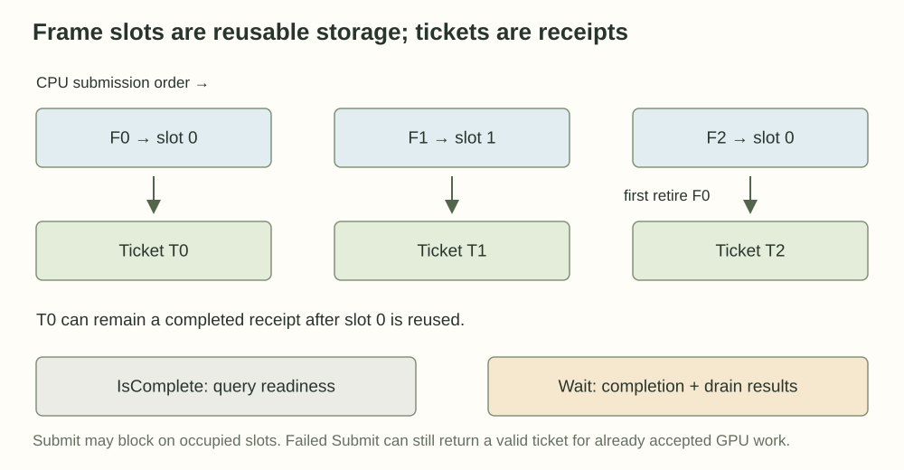
Submit returns without waiting for the new frame's final GPU completion, but it is not guaranteed to be a nonblocking CPU operation. It may materialize the pending physical plan, perform recording, or wait for the previous occupant of the next frame slot. With two slots, a third submission reusing slot zero must first retire slot zero's prior work. A newly initialized persistent buffer can also require a cold upload that completes before the pool is published. These are consequences of bounded resource ownership, and should be included when measuring first-frame latency. [Slot reuse and submission] [Cold initialization]
Independent transient pools do not imply fully independent frames. Imports, persistent objects, and retained outputs can be shared. The current runtime conservatively inserts inter-frame cross-queue waits when shared resources are involved, including shared reads when queue ownership can differ. Within one queue, submission order supplies the necessary sequence. This can reduce overlap, but it preserves the entry/exit ownership contract. A renderer that wants more frame overlap must account for which values are truly private to each frame and which are shared history or external state.
A ticket is not a borrowed pointer into a slot. Its state retains the device, sequence, accepted queue tails, completion promises, telemetry, and report independently. Wait checks that the ticket belongs to the current graph identity and is used outside an execution callback. It waits only the ticket's submitted instances and recovery fences, then drains readbacks and records completion. Repeated waits return the retained result. IsComplete uses a try-lock and polling; it can return false while another thread is waiting, rather than blocking behind that wait. It does not call the draining path. [Ticket state] [Wait and poll semantics]
Failure does not roll back GPU work that was already accepted. Ordinary recording errors can stop submission before useful commands begin, but operations recorded at submit time and provider submission failures can occur later. The report preserves all accepted queue tokens. If a provider throws after accepting work without returning a token, the recovery path attempts to fence that queue's current tail. It does not replace retirement with a whole-device idle. A failed frame prevents ordinary continued submission until the graph is repaired or recompiled. Retirement and editing are separate concerns: a recording error must not prevent retiring work so an edit can repair the graph. [Partial submission] [Recovery and repair boundary]
The safe calling pattern follows from these semantics: preserve a returned ticket whenever one exists, retire it even if submission reported failure, and inspect the completed execution status before using output. Execute() already follows that rule. Runtime destruction retires active frames; a surviving receipt does not become an independent submission API after its executor is gone. Tests cover failed-frame retirement without device idle, out-of-order waits, slot wraparound, and polling while another thread waits. These are the situations that distinguish a reusable frame system from a convenient one-shot callback runner. [Lifetime regression coverage]
Learning better schedules without changing the program
The first compiled schedule uses cost hints. A real upload, compute kernel, or preview draw can take a different amount of GPU time because of resource sizes, hardware, and the particular shader. Arda can collect GPU durations and use them to propose better schedules. This feedback is deliberately narrower than arbitrary runtime optimization: it changes execution ordering under the existing contracts, and adoption must preserve the current physical pool and its aliasing constraints.
Timing is optional and samples supported native queues or CUDA regions. The public timing types distinguish individual-node history from aggregate region statistics. A pipeline batch containing three nodes is measured as a region; the duration is not three independently measured node costs. The adaptive path distributes aggregate duration proportionally to the members' current weights, avoiding overlapping attribution from older grouping variants. It then rescales measured relative costs to the total hint scale, so existing penalties remain expressed in comparable units. Those per-node values are estimates derived from measurement, and should be described that way in profiling tools. [Timing data contract] [Cost attribution]
| Type or field | Information provided | What it does not establish |
|---|---|---|
FArdaInductorTimingSample | Node identities, sample count, EMA, minimum/maximum duration, highest collected frame sequence, and that frame's queue. | A multi-node duration is not an individual measurement for every member. |
FArdaInductorNodeTiming | A bounded raw-history record for a sampled individual node execution. | GPU seconds exclude CPU recording and submission time. |
FArdaInductorAdaptiveSchedulingStats | Iterations, candidates, accepted schedules, pending state, baseline/candidate modeled costs, and last status. | An accepted modeled improvement is not a benchmark proving an equivalent wall-clock gain. |
mGpuTimingEmaAlpha, sampling cadence, history capacity | Smoothing and collection controls. | Unsupported queues or pending queries can leave gaps; history is not an exhaustive execution log. |
| Revision and timing epoch | Validity boundaries for a background proposal and its measurements. | A proposal for an obsolete revision cannot safely replace the current schedule. |
The accumulator uses an exponential moving average: new EMA = old EMA + alpha × (new sample − old EMA). With alpha 0.2, an illustrative 10 ms average followed by a 14 ms sample becomes 10.8 ms. These numbers explain smoothing; they are not Arda benchmark results. EMA follows collection order, which can differ from submission order when tickets are waited out of order. The “last duration” field instead belongs to the highest collected frame sequence. Node identity includes graph identity, index, and generation, so identical display names do not merge unrelated operations. Clearing the profile increments an epoch, rejecting late measurements from the old profile. [Accumulator implementation]
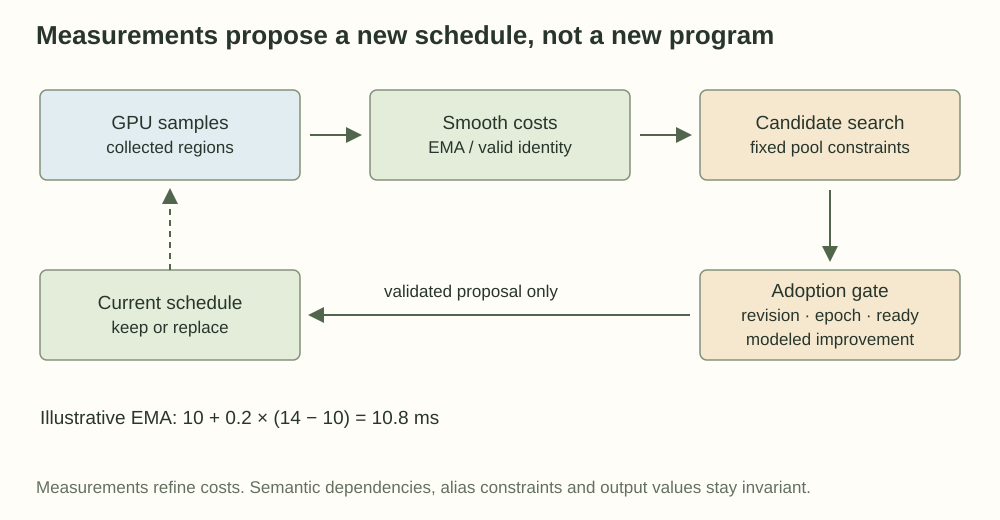
A background request captures immutable inputs, the timing profile, existing memory plan, and retained reusable frame resources. The worker searches and prepares a candidate without sharing the live mutable runtime. Automatic operation requires telemetry, eligible positive samples, an interval between requests, and rules that explicitly permit timing-based reordering. The configured default minimum modeled improvement is two percent. That threshold reduces switching for marginal modeled wins; it cannot eliminate measurement noise or inaccuracies in the scheduling model. [Adaptive defaults] [Worker lifecycle]
Before adoption, the runtime checks the compiled revision and timing epoch. A valid improved proposal waits until active frames can be retired; the ordinary telemetry advance path polls readiness rather than joining the background worker. The proposed runtime rebinds to the live graph and replaces schedule products while preserving the current execution ownership. Explicit edits or destruction cancel and wait for CPU preparation to release retained old pools, preventing replacement allocations from accidentally overlapping those retained by a worker. A structurally unchanged graph can therefore acquire a new schedule revision without becoming a different authored program. [Adoption and cancellation]
Fixed memory is a real restriction on adaptation. Reordering cannot delete the alias dependencies that made the current allocation safe, or pretend a scratch resource has fresh independent storage. The adaptive tests exercise fixed alias dependencies, original activation boundaries, workspace lifetime changes without reallocation, and rejection of obsolete proposals after timing reset. This gives a practical interpretation of adaptation: search for a better use of an already valid execution contract, rather than rebuild all memory whenever timings fluctuate. [Adaptive constraints]
Several forms of reuse coexist, so “cache hit” needs a specific object. A construction revision can reuse a compiled structure; a pipeline cache can reuse native pipeline objects; a frame pool can reuse storage; CUDA execution can reuse its graph cache; timing can reuse a measured cost only when the node name, canonical key, and executable definition still match. None of these by itself authorizes the others. A shader or parameter change can invalidate an operation's timing identity even if its friendly name stays constant. A different order invalidates an allocation proof unless the memory plan is rebuilt or the fixed-plan constraints are explicitly satisfied. [Measured-cost identity] [Allocation-order contract]
Return to the upload, compute, readback example with those boundaries in mind. The authored graph establishes what B means. Preprocessing resolves its semantic dependencies and implementation. Compilation chooses a legal order, memory layout, queues, pipelines, and groups. Lowering binds one frame's objects and builds the barrier and submission protocol. The executor owns those resources until their work retires; the ticket publishes the completed result. Timing can improve the chosen schedule, but cannot change B's required value or weaken any dependency that makes reading it valid. That separation is the architecture worth carrying into Arda's future renderer: every optimization has a precise representation to change and a correctness contract it must preserve.
Reading the source behind the diagrams
This essay studies the local working tree captured on 14 October 2026. It includes APIs and compiler stages that were not yet present in the published source at the time of writing. The source ranges below identify the inspected files and record SHA-256 hashes of their normalized lines. They are evidence for this snapshot, not a claim that another checkout has identical declarations. The existing module API reference may describe an earlier version.
The article’s generators and evidence live under Scripts/Docs/arda_graph_essay/. Run build.py --check --verify-source against the matching working tree to verify both the authored page and its source ranges. The source snapshot manifest records complete file hashes. All timeline costs, memory sizes and sample values in the original diagrams are teaching examples, not benchmark measurements.
comp-lifecycle. Standalone preprocessing requires closed edits, guards the source, clones construction and returns the transformed graph.Source/ArdaInfra/ArdaDependencyGraph/Private/Inductor/Preprocess/ArdaPreprocessor.cpp:20–68
Range SHA-256: 8a16b13723550401b3a0cc7f5c75f3f46e3a8da3fb78b5739da454a1c7dcca5d
comp-preprocess-tests. Tests verify culling without an execution plan, source immutability, failure rollback, retained compiled lifetime and execution rejection without a device.Source/ArdaInfra/ArdaDependencyGraph/Tests/ArdaPreprocessorTests.cpp:97–208
Range SHA-256: 3346444cecf78bd48f7883f5823f464c293ce036cfd13f0d8e46ba852b8254f5
comp-rule-view. Rules receive a borrowed view; preprocessing can edit or remove graph nodes while compilation receives a const view.Source/ArdaInfra/ArdaDependencyGraph/Public/Graph/Node/ArdaInductorGraph.h:15–43
Range SHA-256: 2d14759be8d2fbdc03da047dc5cd9d0760aa9444cdc39ca6daca64a6908e7705
comp-preprocess-validation. Post-rule validation checks valid definitions, lowered subgraphs/stages, unique names, resources, cycles and required resource ordering.Source/ArdaInfra/ArdaDependencyGraph/Private/Inductor/Preprocess/ArdaPreprocessor.cpp:110–199
Range SHA-256: 1954bede153b760d59d18d41e81e220538870673605ebe4533286b82011c105c
comp-default-program. Exact ordered default preprocessing and compilation rule lists.Source/ArdaInfra/ArdaDependencyGraph/Private/Inductor/Config/ArdaInductorRuleSet.cpp:6–35
Range SHA-256: 0602f05fbab4b5e6afe08349bab5b842cd87a0ac6e8273035e5ca2eb41c0cadc
comp-hazard-resolution. Unique producers permit consumer-first authoring; repeated writers use attachment order, select the preceding value and protect readers from overwrites.Source/ArdaInfra/ArdaDependencyGraph/Private/Inductor/Rules/ArdaDependencyHazards.cpp:109–204
Range SHA-256: 0c7d91f712f843c6b1cbd15bf6c373236314177fccc94f229d18345d7a979aed
comp-hazard-tests. Repeated-write, independent-reader and ReadWrite tests establish producer selection and ordering without reader-reader dependencies.Source/ArdaInfra/ArdaDependencyGraph/Tests/ArdaInductorTests.cpp:492–584
Range SHA-256: cf486dab0d9136952b8fe35b5150e4c134d5efa7aaa8aac384019374429cbab7
comp-range-sweep. Buffer intervals and texture mip/slice/plane ranges are swept for overlap; reads require complete producer, external or initialization-prefix coverage.Source/ArdaInfra/ArdaDependencyGraph/Private/Inductor/Rules/ArdaDependencyHazards.cpp:29–296
Range SHA-256: 30fba69745f981a3593330083dfbc98a416191d438086fe98593389500a4e62a
comp-access-validation. Access validation rejects invalid identities, directions, unknown states, invalid ranges, incompatible buffer states and missing attachment accesses.Source/ArdaInfra/ArdaDependencyGraph/Private/Inductor/Preprocess/ArdaInductorDependencyRules.cpp:9–179
Range SHA-256: a9f01caa77104836950ae8bc9945a88163d49e0fb1aed29fe1d7d5254f939071
comp-usage. Automatic usage is resolved to required capabilities; explicit and imported resources must satisfy requirements and final descriptors are concrete.Source/ArdaInfra/ArdaDependencyGraph/Private/Inductor/Preprocess/ArdaInductorResourceUsageRules.cpp:286–448
Range SHA-256: 01485d3a41bb381725c0149ac7b8a939ae0ac1851c6a3ce817450f94a43b7dd3
comp-culling. Side effects and writes to output, persistent or external resources root a backward traversal through every incoming edge; culling marks nodes rather than deleting them.Source/ArdaInfra/ArdaDependencyGraph/Private/Inductor/Preprocess/ArdaInductorCullingRules.cpp:6–50
Range SHA-256: 58ce2565b974163a5931c70d0aba1b55c34fa91fc5ef2e2787c6c4572f74560f
comp-compile-entry. Compilation requires a closed preprocessed graph, validates bindings and rules, clones input, prepares nodes, runs ordered rules, validates the result and retains the snapshot.Source/ArdaInfra/ArdaDependencyGraph/Private/Inductor/Compiler/ArdaInductor.cpp:24–173
Range SHA-256: de47930dbfbd206194ba86727619d0f48e9facbc9cfadb824fce8c203df6559b
comp-prepared-state. Preparation preserves transformed semantic descriptions, rehydrates native declarations by provenance, validates requirements and clones stage parameters per assembled draw.Source/ArdaInfra/ArdaDependencyGraph/Private/Inductor/Compiler/ArdaInductorNodePreparation.cpp:148–436
Range SHA-256: 7329f714d1eaaedcb794f88d8c94914eff17c537289fe9e49b8e3d4d502fa7dc
comp-requirement-type. Node requirements combine portable features, CUDA conditions and named read-only environment predicates; declaration validation differs from device admission.Source/ArdaInfra/ArdaDependencyGraph/Public/Graph/Node/ArdaDependencyRequirements.h:13–72
Range SHA-256: 802efda6485874ce42db888a17846d292562b66f1064683845bf14a5e5e07042
comp-feature-checks. Admission retains compiler-source and subgraph contracts, rechecks explicit requirements, and distinguishes device-independent analysis from inferred native support.Source/ArdaInfra/ArdaDependencyGraph/Private/Inductor/Compiler/ArdaInductorRequirementsRules.cpp:37–159
Range SHA-256: b401f030e347a3f46b8406b72c93f8b5e836e17ebca84a87d90d16049b02b5a0
comp-pipeline-inference. Pipeline inference validates ancestry, respects same-family consumer boundaries, disambiguates groups, combines settings/layouts/stages, validates patterns and computes semantic identity.Source/ArdaInfra/ArdaDependencyGraph/Private/Inductor/Compiler/ArdaInductorPipelineInference.cpp:7–206
Range SHA-256: dbfac91ad1d2b86ad84a366c9dad268e5f6175eff487a3a50ba650078e62c6d1
comp-pipeline-rule. The default inference rule validates each live node using its already assembled node-local contributions and shader contracts.Source/ArdaInfra/ArdaDependencyGraph/Private/Inductor/Compiler/ArdaInductorPipelineRules.cpp:6–66
Range SHA-256: 5e3b88be613080d04b657bd46319c4221e0b6e70e424aaf8c44cb5cf092cc585
comp-pipeline-types. Pipeline contributions, requests, configurations, projected nodes, semantic patterns and resolved native references carry distinct information.Source/ArdaInfra/ArdaDependencyGraph/Public/Inductor/Rules/ArdaInductorPipeline.h:13–130
Range SHA-256: 37ed9f38b9ea6d595455f2e323760a33954c8bb8db1ef86d2ca0e8b4bbadb0fd
comp-shader-contract. Shader contract validation checks reflected shader schemas, binding layouts and declared resource access coverage.Source/ArdaInfra/ArdaDependencyGraph/Private/Inductor/Rules/ArdaInductorShaderContracts.cpp:99–334
Range SHA-256: 059ab3c2123acb8ae8702d514acde674c3ac241801fa71fa7f9670396ea501a8
comp-rule-tests. Rule instances may repeat and execute in list order; invalid custom orders, missing output and exceptions fail without publishing partial results.Source/ArdaInfra/ArdaDependencyGraph/Tests/ArdaInductorRuleTests.cpp:219–474
Range SHA-256: b5a72ee32b23ddf669785fc94c4ba918b05d8964d8c27b508fa60f1ff83211ad
comp-result-types. The compile result retains input and node state plus execution order, memory proof, queue/stream batches, logical fence edges and diagnostics.Source/ArdaInfra/ArdaDependencyGraph/Public/Inductor/Compiler/ArdaInductorCompileResult.h:21–118
Range SHA-256: 7793c44be26295a8dcdc4b5dd85daeff9a0e19c0526df950681a634e991ae2a2
comp-dispatch-lowering. Flattening partitions executable nodes into dispatches; fence resolution preserves topology and alias dependencies through declarations and adds queue/stream chaining.Source/ArdaInfra/ArdaDependencyGraph/Private/Inductor/Compiler/ArdaInductorDispatchRules.cpp:45–244
Range SHA-256: 1c6a29965d6b2c44fe8c7e2759aaffd581caafa25800ec67d852ba8c6d8bfc32
comp-final-validation. Final validation checks node partitions, dependencies, allocation/order consistency, batching compatibility, dispatch completeness and required cross-domain fences.Source/ArdaInfra/ArdaDependencyGraph/Private/Inductor/Compiler/ArdaInductorRuleValidation.cpp:47–272
Range SHA-256: c233c4762b4434967f73f64e6216e2fc678d34f23259b8ae5ef1bea074c004f8
comp-access-type. Access declarations identify a resource, read/write direction, required RHI state and buffer or texture subresource range.Source/ArdaInfra/ArdaDependencyGraph/Public/Graph/Resources/ArdaDependencyResource.h:43–61
Range SHA-256: 5f6fd720ee589cd7c3d302cc43a2c8b2c877aafd5e405f9ad7ed6d6670955e72
comp-topology-type. Frozen node payloads retain semantic declarations, attachment order and lowering/culling annotations; edge payloads distinguish value and overwrite dependencies.Source/ArdaInfra/ArdaDependencyGraph/Public/Graph/Node/ArdaDependencyTopology.h:19–61
Range SHA-256: fce3944c7569057fd2120a39fcce9c9d123ac1a411046eb2afdaea568323de2b
comp-rule-contracts. Rule instances retain immutable configuration, expose stable names and disable adaptive scheduling unless explicitly opted in.Source/ArdaInfra/ArdaDependencyGraph/Public/Inductor/Rules/ArdaGraphRule.h:9–26
Range SHA-256: b9f8b51bad45e7fb523088d9e78d3a19da87d7fb52af918b4361ba18513e782d
comp-rule-set. Ordered shared immutable rule instances form the compiler program; rule identity and order participate in revision caching.Source/ArdaInfra/ArdaDependencyGraph/Public/Inductor/Config/ArdaInductorRuleSet.h:11–32
Range SHA-256: 8cdc3f0cef6462e20662def6a5961a66a793f93b2a1c6563c1890c949eb26146
comp-preprocess-rule. Preprocessing rules receive a mutable private graph view.Source/ArdaInfra/ArdaDependencyGraph/Public/Inductor/Preprocess/ArdaGraphPreprocessRule.h:7–33
Range SHA-256: 2318ebe548539faf2868261341beb5b8802ac6b035ca8c61adb2988a20c33b80
comp-compile-rule. Compilation rules read a const graph view and refine the unpublished execution result.Source/ArdaInfra/ArdaDependencyGraph/Public/Inductor/Compiler/ArdaGraphCompileRule.h:7–35
Range SHA-256: 0a9a2985141ac59f5f0909e4091a54ad62f573ee29ef9b162d82b55ee019ce2a
exec-result. Compile result separates semantic order, device execution state, memory proof, queues, grouping, dispatches, fences, and search diagnostics.Source/ArdaInfra/ArdaDependencyGraph/Public/Inductor/Compiler/ArdaInductorCompileResult.h:1–118
Range SHA-256: 2677c82c2bebbfb040e7ba0c158dc3c5bb6a74e7ca35d798963dc3177d382ad4
exec-options. Scheduling and timing defaults, hard memory budget, frames in flight, search modes, and adaptive configuration.Source/ArdaInfra/ArdaDependencyGraph/Public/Inductor/Config/ArdaInductorConfig.h:1–65
Range SHA-256: 412d45455e498bed1f4ca5470ed9f63915512f855e621b2d4d02612c8696d7d2
exec-ordering. Search and stable ordering validate topological order; configured search produces and publishes order diagnostics.Source/ArdaInfra/ArdaDependencyGraph/Private/Inductor/Compiler/ArdaInductorOrderingRules.cpp:1–174
Range SHA-256: 4064f0cab280ac20e4d131a32ed305bc8ffdd86f804f08a06da653410303c0b3
exec-search. Greedy critical and memory ordering, bounded local candidate improvement, and iterative exhaustive/backtracking search.Source/ArdaInfra/ArdaDependencyGraph/Private/Inductor/Rules/ArdaInductorSearchRules.cpp:1–195
Range SHA-256: a879c96e6fa3ec616532d8c713c7fbba871f5fd0d0ab6eb77b87608f0f768b9c
exec-evaluation. Build allocation lifetimes, evaluate serialization policies, preserve alias dependencies, estimate queue makespan and domain/alias penalties, rank candidates.Source/ArdaInfra/ArdaDependencyGraph/Private/Inductor/Compiler/ArdaInductorScheduleEvaluation.cpp:1–172
Range SHA-256: 262dbd8b5d8e05f088555dd767ea3b69a149a424545c85500c4d21afaa601298
exec-queues. Queue placement requires device support and legal states, sufficient compute chain and independent graphics slack, includes memory edges; CUDA runs ignore declarations.Source/ArdaInfra/ArdaDependencyGraph/Private/Inductor/Compiler/ArdaInductorQueueRules.cpp:1–324
Range SHA-256: 4cd646812bc2a1981acce0aafda2ced96c4b87b851268e567f1de6ffa4a19bb6
exec-memory-types. Memory requests, native requirements, heap restrictions, alias activations, accounting across frame pools, and describe/plan/materialize separation.Source/ArdaInfra/ArdaBackend/Public/RHI/Memory/ArdaMemoryPlanner.h:1–163
Range SHA-256: 255a730d6f36fce138ce89bc0da5b95e31c39d7a4fe7f900c2708907f5b2784c
exec-memory-rules. Imports and persistent resources retained, outputs persistent for allocation, retained adapter workspace accounted, synthetic scratch and CUDA placement restrictions, hard caps require native device requirements.Source/ArdaInfra/ArdaDependencyGraph/Private/Inductor/Compiler/ArdaInductorMemoryRules.cpp:1–219
Range SHA-256: 9a8b3012d55958f83cc034586ba2de81df74a8eb8532876e91cf159a6a38e792
exec-preparation. Pending physical plan materialization stages ownership and can retry; cold persistent initialization waits; per-frame pools, bindings, and lowering prepare before runtime publication.Source/ArdaInfra/ArdaDependencyGraph/Private/Inductor/Runtime/ArdaInductorPreparation.cpp:1–267
Range SHA-256: f56c12889d70ee94d8876b252878c9bcb0958c2775a68d64c2ed0fe69a7dfdf5
exec-lowering. Dispatches bind actual physical resources; aliases insert image activation/retirement; CUDA and acceleration-structure commands record at submit time.Source/ArdaInfra/ArdaDependencyGraph/Private/Inductor/Compiler/ArdaInductorFrameLowering.cpp:1–332
Range SHA-256: bc5b36ed1ace68d7bca6627ec582fd75487fcbdf2861510456191a4085305a78
exec-batching. Batch compatibility includes pipeline and framebuffer format, queues, memory boundaries, and access hazards; not general shader fusion.Source/ArdaInfra/ArdaDependencyGraph/Private/Inductor/Compiler/ArdaInductorBatchingRules.cpp:1–209
Range SHA-256: 6a75203500d5d62177d6ed86399506bae2c54110f6085085f6293367ab40b2e9
exec-dispatches. Batches partition executable nodes, one CUDA framework stream, fence resolution contracts declarations and includes memory edges and per-domain chains.Source/ArdaInfra/ArdaDependencyGraph/Private/Inductor/Compiler/ArdaInductorDispatchRules.cpp:1–244
Range SHA-256: b5d9788a05d90e50d4e092c08533fb520e55b477f2e949f5c00bdca5f8bd8797
exec-cuda-contract. CUDA operand access, state, byte ranges and texture mip/layer footprint must be covered by current node declarations.Source/ArdaInfra/ArdaDependencyGraph/Private/Inductor/Runtime/ArdaInductorCudaContract.cpp:1–140
Range SHA-256: f7f4c80407788ce8c277a6cf354faccc16be6fa115c4b921412497e668699825
exec-instancing-compile. Instancing candidates require all stage opt-in, compatible logical bindings and targets, no other storage effects or unsupported per-node state.Source/ArdaInfra/ArdaDependencyGraph/Private/Inductor/Compiler/ArdaInductorInstancingRules.cpp:1–162
Range SHA-256: cd3e0b4b53048653c9ac5c8eb77d2fa67f59472eb0f67383040985942015d254
exec-instancing-native. Native merge checks pipeline, bindings, framebuffer, geometry, viewport/scissor, draw parameters and contiguous non-overflowing instance ranges.Source/ArdaInfra/ArdaDependencyGraph/Private/Inductor/Runtime/ArdaInductorInstancing.cpp:1–142
Range SHA-256: ded0195f90a58ab341af82af724ac786d52ab259f87ca494a09eacfcec253d48
exec-instancing-tests. Tests verify explicit stage permission, resource differences and storage effects prevent merge, and preserve noncontiguous/reset instances and native state changes.Source/ArdaInfra/ArdaDependencyGraph/Tests/ArdaInductorInstancingTests.cpp:191–331
Range SHA-256: 6beb6afa0e9c7dec742d59a3418f8f0be497c247ab052df3e9061bf2461b65cb
exec-command-types. Private command program stores already bound resources and recording/dependency/state products, not authoring/allocation/culling/scheduling.Source/ArdaInfra/ArdaDependencyGraph/Private/Inductor/Compiler/ArdaInductorCommandProgram.h:1–385
Range SHA-256: 9c01ac5e7b19bd8f3e1ce6ec790f3e0d9c0634b32204dedeacf4b11cb8b131ee
exec-command-program. Finalization merges read requirements, tracks texture cells and whole-buffer states, emits barriers and entry/exit sentinel plan.Source/ArdaInfra/ArdaDependencyGraph/Private/Inductor/Compiler/ArdaInductorCommandProgram.cpp:1–385
Range SHA-256: d079439cae0a0f7fe2f074ee5476ab9102c8f34e04e710aa83e2dac19db04f67
exec-transitions. Physical identities drive continuity; queue ownership transfer introduces release/acquire and dependencies, while UAV buffer barriers consider overlap and writes.Source/ArdaInfra/ArdaDependencyGraph/Private/Inductor/Runtime/ArdaInductorPhysicalTransitions.cpp:1–178
Range SHA-256: c4f6b300b90ee30a1ecbfe2f14b11bf09b0b17141b73b2a7951989fe39a7422f
exec-frame-boundary. Equal-state exit transitions preserve ownership transfer and aliased image retirements define reusable boundary.Source/ArdaInfra/ArdaDependencyGraph/Private/Inductor/Compiler/ArdaInductorFrameBoundary.cpp:1–89
Range SHA-256: 2cd3dd78d30ef0fb2a7e702e835dde24fb2c7d1af87e0e423a945d9d7fbf7b4d
exec-command-executor. Independent recording uses bounded CPU jobs while deterministic submission honors queue tokens and retains accepted work after partial failure.Source/ArdaInfra/ArdaDependencyGraph/Private/Inductor/Runtime/ArdaInductorCommandExecutor.cpp:1–288
Range SHA-256: 361cf54c7f76f60fe524571d01f74e331f363cb6f86dc4b62280341007d95df2
exec-execution-report. Execution result includes status, counts, submission tokens, dependencies, and independently observed state/ownership conformance.Source/ArdaInfra/ArdaDependencyGraph/Public/Inductor/Runtime/ArdaDependencyGraphExecution.h:1–138
Range SHA-256: 3d155db4231c12d1e1eb40deded113c89323015c4b0b89df025b2a9409d5278b
exec-owner. Executor validates successful plan, atomically claims execution ownership, retains cloned compiled input and delegates execution.Source/ArdaInfra/ArdaDependencyGraph/Private/Inductor/Runtime/ArdaGraphExecutor.cpp:1–70
Range SHA-256: b866dffa72a16865b861b1fa4f39baaca750afa9b674d7cb052221aed590d8b0
exec-owner-test. Standalone compile result survives source destruction, preserves input, rejects second executor claiming copied plan, and device-independent plans cannot execute GPU work.Source/ArdaInfra/ArdaDependencyGraph/Tests/ArdaPreprocessorTests.cpp:167–208
Range SHA-256: 7afb0d49d4a128288e27b03d66eed8f5ebb8430e8936a9e76ef2bd318c4d712a
exec-readbacks. Native callbacks fulfill promises; draining publishes in compiled pass order and clears all pending destinations on any failure.Source/ArdaInfra/ArdaDependencyGraph/Private/Inductor/Runtime/ArdaInductorReadbackCompletions.cpp:1–97
Range SHA-256: 7af42bd76026c16f4b7c246afd1f880dbf869bcb44c32961cd0c1ae3493eb641
exec-completion-tests. Readback tests cover delayed publication, destroyed unsubmitted callbacks, partial submission drainage, and all-output invalidation.Source/ArdaInfra/ArdaDependencyGraph/Tests/ArdaInductorCompletionTests.cpp:15–114
Range SHA-256: bf755bc3ee4949e3b1985cfc4e8b07a3cc8824a0797e00e659399d6c92c6c83d
exec-submission. Submit may wait for pool reuse, returns tickets for partial failure, serializes shared inter-frame ownership, Wait retires accepted work and publishes readbacks, and IsComplete polls without draining.Source/ArdaInfra/ArdaDependencyGraph/Private/Inductor/Runtime/ArdaInductorSubmission.cpp:1–339
Range SHA-256: e24845a946db90d3c08aab2b5f007adf9c1d51647756bf42dcf0a73a07c200fe
exec-ticket. Ticket completion identity and retained report, device, tokens, readbacks and telemetry are independent of reusable frame slot.Source/ArdaInfra/ArdaDependencyGraph/Private/Inductor/Runtime/ArdaInductorFrameTicketState.h:1–27
Range SHA-256: 153bba3f3e674e2522d908cab5eecc69831b91c8536dcd2c02871af671533c43
exec-lifecycle-tests. Lifecycle tests defer tuning until retirement, reject obsolete telemetry epochs, retry failed materialization, retain receipts, and avoid device idle and blocking polling.Source/ArdaInfra/ArdaDependencyGraph/Tests/ArdaInductorLifecycleTests.cpp:550–937
Range SHA-256: 857b6c47761d531836bfdb159d26d62cea44e4aedadec74c6f27eefe6c0587cf
exec-timing-types. Timing aggregate/individual distinctions, collection-order EMA, latest frame fields, bounded raw node history, and modeled adaptive statistics.Source/ArdaInfra/ArdaDependencyGraph/Public/Inductor/Runtime/ArdaInductorTiming.h:1–55
Range SHA-256: 5e99c11b7ffddab3d2f203322f5853776c5b423134d3a7a78a681d18a16dedf3
exec-adaptive-runtime. Measured-region attribution, immutable background snapshots, pool reuse, revision/epoch validity, retirement-gated adoption and explicit cancellation.Source/ArdaInfra/ArdaDependencyGraph/Private/Inductor/Runtime/ArdaInductorAdaptiveRuntime.cpp:1–309
Range SHA-256: ee3c37239ac6de0a5cdb3917ac62cfbf2225a62635eb8f386515a8747e15bcf4
exec-timing-accumulator. EMA, stable node identity keys, collection-order handling, bounded individual-node history, and epoch reset.Source/ArdaInfra/ArdaDependencyGraph/Private/Inductor/Runtime/ArdaInductorTimingAccumulator.cpp:1–126
Range SHA-256: d64ec7836fbfc4c7928d6004fa066fb09e682f7edae0d981bbf02aaf31d168b7
exec-adaptive-tests. Adaptive tests cover bounded progress, hysteresis, preserving fixed alias/budget constraints, workspace allocation reuse and proportional batch attribution.Source/ArdaInfra/ArdaDependencyGraph/Tests/ArdaInductorAdaptiveScheduleTests.cpp:171–450
Range SHA-256: 1616396292ae4cced397da9345f1089c59e18f74466457fc08f96e2428e0d363
exec-node-cost. Timing cost override applies only when node name, canonical key, and executable definition match; declarations cost zero.Source/ArdaInfra/ArdaDependencyGraph/Private/Inductor/Compiler/ArdaInductorScheduleCost.cpp:1–21
Range SHA-256: 1663b5309057d90dfaab80e29a44f958de41e22f36f8c20b9edaefdcbfdc79b0
exec-frame. Frame slot owns physical memory, lowered commands, per-node bindings, timer state and CUDA caches; reusable-frame record retains pools for adaptation.Source/ArdaInfra/ArdaDependencyGraph/Private/Inductor/Runtime/ArdaInductorFrame.h:1–42
Range SHA-256: 76d923a0527f8dad4c132d27122c56c239c5090b1376dce1dd637cd9c0c1400a
exec-execution-state. Device ownership and mutable runtime/caches/timing are stored separately from authored topology and execution ownership is single-claim.Source/ArdaInfra/ArdaDependencyGraph/Private/Inductor/Runtime/ArdaInductorExecutionState.h:1–34
Range SHA-256: d7af8c09386cdfabe4e60dd02bb5e425d0d148e51400aa998a0ead6b19d132d4
exec-queue-wait-d3d12. D3D12 queues a GPU-side wait for the producer timeline value.Source/ArdaInfra/ArdaBackendImpls/D3D12/ArdaD3D12Backend.cpp:8960–8979
Range SHA-256: 595a21193c36212a167904182e4cb6f9c04bce1d7b3901802cb9f266854c9522
exec-queue-wait-vulkan. Vulkan submits a timeline-semaphore wait to the consumer queue.Source/ArdaInfra/ArdaBackendImpls/Vulkan/ArdaVulkanBackend.cpp:10248–10285
Range SHA-256: 0f86e0a15d40c0e5410f36fe9980e33ed4da60570806cbd5f979a09d9ec5c505
exec-queue-wait-provider. The generic QueueWait fallback uses host completion waiting; providers may override it.Source/ArdaInfra/ArdaBackend/Public/RHI/Providers/ArdaRHIProviderDevice.h:446–464
Range SHA-256: 54a27ea0a6e2351e9a7ccc1f4e9e5076ab158b71352a01e912f4e40bf6cad5cf
model-graph-foundation. Generic graph owns payloads, indexed adjacency and idempotent endpoint pairs; mutation requires external synchronization.Source/ArdaInfra/ArdaGraph/Public/ArdaGraph.h:152–218
Range SHA-256: 54e05e7bf2da7acbf19ec79fd981600f4d95a13e97790162fbd3b2801cd38bc4
model-handle. Stable handles encode graph identity, slot and generation; structural validity differs from liveness.Source/ArdaInfra/ArdaGraph/Public/ArdaGraph.h:27–96
Range SHA-256: 6e50354d788ee2f88f92e49b70726b7bab98cd17b73413cc7cacb7acdce0f64c
model-handle-lookup. Graph lookup checks graph identity, slot bounds, generation and live payload.Source/ArdaInfra/ArdaGraph/Public/ArdaGraph.h:340–379
Range SHA-256: ba483d70cd63cc4e6cee90492ad80495f45a9aed636adc9d496aae15e3a05495
model-graph-snapshots. Explicit snapshots share graph identity and lineage generation allocation; ordinary copying is disabled.Source/ArdaInfra/ArdaGraph/Public/ArdaGraph.h:228–308
Range SHA-256: 0f7cb2dfbe7b78389f2f030524232b7be334f2d042afc36ff3655084f70467e7
model-topological-result. Topological results distinguish ordered prefix, closed cycle witness and blocked nodes.Source/ArdaInfra/ArdaGraph/Public/ArdaGraph.h:128–143
Range SHA-256: 1c82c5f70fa3b34f71244d4602db6c2c383de9a0450abd89be7d9d4f529d342e
model-graph-lifecycle. Persistent graph transaction, preprocessing, revision selection and submission lifecycle contract.Source/ArdaInfra/ArdaDependencyGraph/Public/Graph/Node/ArdaDependencyGraph.h:22–153
Range SHA-256: f3c572565900e722259cd695315fddf3a93c0248d6be8e13d6097d7e1456d7be
model-topology. Frozen dependency node payloads and distinct resource/hazard edge flags specialize the generic graph.Source/ArdaInfra/ArdaDependencyGraph/Public/Graph/Node/ArdaDependencyTopology.h:11–60
Range SHA-256: 77fef996665cedb2a6e8b49880f0dab6fd626f98fec9c7127f1969ec2870a0f5
model-resource-identity. Logical resource identity and read/write/state/range declarations.Source/ArdaInfra/ArdaDependencyGraph/Public/Graph/Resources/ArdaDependencyResource.h:10–60
Range SHA-256: 627d1c26aad408e5c2db9da2aaff80fcde09c971df24e2ccfe86c6155ddf6591
model-resource-description. Resource descriptors distinguish graph-owned storage, persistent/output flags and named external slots/bindings.Source/ArdaInfra/ArdaDependencyGraph/Public/Graph/Resources/ArdaDependencyResource.h:62–108
Range SHA-256: ab0eeff717ea68c1dd1c53528d28dab82a0c682ba700e0d5c88787172d6d751e
model-typed-values. Typed resource wrappers are non-owning aliases of a logical handle, not immutable content versions.Source/ArdaInfra/ArdaDependencyGraph/Public/Graph/Resources/ArdaGraphValue.h:10–66
Range SHA-256: 6aa6477ea7b01c11435cc9289a89bf0c1248eccca2766e65b6f3dc89699401d8
model-tensor. Graph tensor wraps logical buffer and Backend layout; resolution performs no allocation or copy.Source/ArdaInfra/ArdaDependencyGraph/Public/Graph/Resources/ArdaGraphTensor.h:13–31
Range SHA-256: 1b45c9046e8327845ef42baf1e1877c8f511b4a3eb03d80f06b47ebab86db93e
model-resource-operations. Resource facade declares storage/lifetimes and external slots; initialized buffers and repeated uploads have distinct semantics.Source/ArdaInfra/ArdaDependencyGraph/Public/Graph/DefaultNodes/ArdaGraphOperations.h:12–88
Range SHA-256: 6903db6e6c115c55d16c7e57c87031757e6b62dacf42f213b1aa948c7be6dcee
model-readback. Readback retains CPU output published after successful Execute/Wait; sharing vectors requires serialized executions.Source/ArdaInfra/ArdaDependencyGraph/Public/Graph/DefaultNodes/ArdaGraphOperations.h:125–141
Range SHA-256: 3957da7d6df28cecea5cc8d4681bd31818696a186d688a3e05298d2451e58fa4
model-node-description. Description exposes accesses, bindings, pipeline requests, cost/workspace/effects and compiler-owned stage metadata.Source/ArdaInfra/ArdaDependencyGraph/Public/Graph/Node/ArdaDependencyNodeDesc.h:10–83
Range SHA-256: 2ff52d0883dfbc0b3dd215c56862a570be774a42d02f901c51402e335ddbed36
model-parameter-schema. Parameter metadata exposes resource/stage kinds, access, schema mappings and typed callbacks for effects, keys and archives.Source/ArdaInfra/ArdaDependencyGraph/Public/Graph/Node/ArdaNodeParameters.h:196–293
Range SHA-256: 3743e12a4ba0b2e0a11cc994be25801e02254c2c6452c82e4fa55900ae993b08
model-node-definition. Typed definition maps execution categories and shader stages to specific contracts; Subgraph expands during compilation.Source/ArdaInfra/ArdaDependencyGraph/Public/Graph/Node/ArdaNodeDefinition.h:9–118
Range SHA-256: 55ca4e40ae4df34f60e5874a4f62f953cf111a4d0c1c10fcbc86ad11a2d84a64
model-node-contract. Node contract separates public parameters, immutable device state and private instance state; preparation never submits GPU work.Source/ArdaInfra/ArdaDependencyGraph/Public/Graph/Node/ArdaDependencyNode.h:184–239
Range SHA-256: 35a59b1a80d62e25c40290aec4446b6109801b9dd1511573efb66133472af9bd
model-registry. Immutable erased executable definitions retain typed hooks and outlive registry removal in existing graphs.Source/ArdaInfra/ArdaDependencyGraph/Public/Graph/Node/ArdaDependencyNodeRegistry.h:28–120
Range SHA-256: 8889ff4aede143a8842b11cebf309d6b434630d0115f3cb3f5ac0479296ccedc
model-canonical-key. Canonical keys encode semantics, normalize construction identities and retain full identity bytes.Source/ArdaInfra/ArdaDependencyGraph/Public/Graph/Node/ArdaDependencyKey.h:10–107
Range SHA-256: 3b071e004192acd341953b1b8e3642853a2ff1b6a0618fcc4253dd5f4a0d2cb7
model-operation-output. Operation output retrieval is edit-bound and precedes compilation; resource values have construction-scoped validity.Source/ArdaInfra/ArdaDependencyGraph/Public/Graph/Node/ArdaGraphEdit.h:28–61
Range SHA-256: 21aadfbe80fb9f2e7b74970967f6b4b46efac70805ae8cde790f6d7f3ebfed79
model-operation-invocation. AttachOrFind validates schema and named identity, retains parameter snapshots and rejects changed definitions/keys.Source/ArdaInfra/ArdaDependencyGraph/Public/Graph/Node/ArdaDependencyGraph.h:201–248
Range SHA-256: 902a33d16d2436b87b260f56f0ddf5927608969f488b543d1a8433c94cc535ec
model-edit-contract. Private edit retains first failure and cancels uncommitted work; concurrent publication follows commit order.Source/ArdaInfra/ArdaDependencyGraph/Public/Graph/Node/ArdaGraphEdit.h:63–121
Range SHA-256: d16adae85f64a694e3c16ab11c4d417ca2206f7cdfa652da28be46977822063f
model-array-invocation. Array invocation records distinct lanes with provenance; slots zip and scalar slots broadcast after length checks.Source/ArdaInfra/ArdaDependencyGraph/Public/Graph/Node/ArdaGraphEdit.h:188–243
Range SHA-256: ee45e36a003dcf24c018d4a05aecad16e8cc88f29c054074002315825dcbe9a4
model-revision-cache. Compile selects cached revisions, locks edits and retains default four-entry cache with configurable capacity.Source/ArdaInfra/ArdaDependencyGraph/Public/Graph/Node/ArdaDependencyGraph.h:103–123
Range SHA-256: 9e50b316b3fc51f62afee92c396ded6b657fa5f744789faafe8d27203f1b8220
model-revision-tests. Tests establish queued edits, compile lock, empty fresh construction and reuse with fresh handles and alternate revisions.Source/ArdaInfra/ArdaDependencyGraph/Tests/ArdaGraphRevisionTests.cpp:53–163
Range SHA-256: 730844725311f72e4610bac1e35bc66660bfb61484b6d43be4121b994685b646
model-revision-identity-tests. Descriptors, names, options, operation order and edit order affect construction identity.Source/ArdaInfra/ArdaDependencyGraph/Tests/ArdaGraphRevisionTests.cpp:165–221
Range SHA-256: 1af047ad3af1229d96535c030e7fb90ee9b96775e3f05077e96636aaa00bb234
model-revision-repair-test. Old handles fail in fresh construction; failed compilation can be repaired by a later producer edit.Source/ArdaInfra/ArdaDependencyGraph/Tests/ArdaGraphRevisionTests.cpp:223–268
Range SHA-256: 8572b17983edbd7a5af9562897b7bbcafe5e9e50344badc8b8356fff87b8f0c6
model-concurrency-tests. Concurrent tests reject compilation with open scopes and enforce atomic name/option conflicts.Source/ArdaInfra/ArdaDependencyGraph/Tests/ArdaGraphConcurrentEditTests.cpp:269–345
Range SHA-256: 01cbb93070ddba78557f6f350604f3b22d1f96a7ad70eb4dbb6cde1ea4507983
model-operation-identity-test. Identical uploads remain distinct and preserve reads between in-place writes.Source/ArdaInfra/ArdaDependencyGraph/Tests/ArdaGraphOperationsTests.cpp:85–109
Range SHA-256: de1e302fe93f2dd200c5befec7ca329fef082ec2c0fee27a61477a769fdb62df
model-failed-edit-test. First authoring failure prevents mutation and requires cancellation before retry.Source/ArdaInfra/ArdaDependencyGraph/Tests/ArdaGraphOperationsTests.cpp:147–173
Range SHA-256: 36df658b8672fdaef1be598fc58ac875d5afdb8dff893a3b13dcc7bdc653bc3f
model-operation-gpu-test. GPU operation test exercises upload, clone, clear, CopyTo and completed readback with compile and execution.Source/ArdaInfra/ArdaDependencyGraph/Tests/ArdaGraphOperationsTests.cpp:476–506
Range SHA-256: 8823d433a6bcb42b89b03fc064eab95838bf4288cc6715608bfee68fa58346e9
model-subgraph. Subgraph authors ordinary children during compilation and binds named logical inputs/outputs without mandatory copies.Source/ArdaInfra/ArdaDependencyGraph/Public/Graph/Node/ArdaSubgraph.h:10–60
Range SHA-256: 8cbe444cf3ca3ee4697f8f3a241ae9e806b5d60e76ccb82c38a1efd495a9ccde
model-serialization. Deterministic structural archives exclude native runtime objects, use named external slots and atomically admit portable definitions.Source/ArdaInfra/ArdaDependencyGraph/Public/Graph/Node/ArdaGraphSerialization.h:10–35
Range SHA-256: b4575f127c6a65e529a8b63476894515bc18d3b8d4a9d3c91eddbc3968b55405
model-runtime-definition. Runtime definitions embed CUDA code and exact ABI metadata; invocations use logical buffer ranges or scalar bytes.Source/ArdaInfra/ArdaDependencyGraph/Public/Graph/Node/ArdaRuntimeNodeDefinition.h:12–89
Range SHA-256: c709c6aaba4411543f78b6c361b71feb2ebdb09122c2bcd179eeabbe94ad0373
model-package. Package exposes static tensor interfaces and expands specialized dispatch/fill/copy recipes into caller operations.Source/ArdaInfra/ArdaDependencyGraph/Public/Graph/Node/ArdaGraphPackage.h:12–72
Range SHA-256: dd5b1b1dd7fca88f61b75eef73000f9dc2d183ddf133a3491ff903dfb70a2e83
model-hazard-resolution. Unique-producer reads are attachment-order independent; multi-writer reads consume preceding values and precede later overwrites; edge flags combine.Source/ArdaInfra/ArdaDependencyGraph/Private/Inductor/Rules/ArdaDependencyHazards.cpp:88–160
Range SHA-256: a518a8323cce45c6093068f2ce26782719e0b86129883b5be992985002041cf1
packages-capture. Export deep-copies the model to CPU eval, strictly captures with torch.export, rejects mutations/randomness, compares eager/captured outputs and exports ONNX.Tools/ModelExport/arda/_export.py:258–314
Range SHA-256: 996d095a39af8f6bf1c2e0db90dca6f78497d35722e4f3c14766f77bc1886492
packages-input-contract. Input profiles require positive static dimensions and supported dtypes; per-target precision checks reject unsupported combinations.Tools/ModelExport/arda/_export.py:63–95
Range SHA-256: aea006f466b7eef2329a37c1e0d0f6067d9a7fce88772b85d8e5c0cd53fbc81f
packages-input-binding. Public exporter flattens tensor leaves and frozen scalar arguments, validates dense finite inputs and rejects shared input storage.Tools/ModelExport/arda/_export.py:150–228
Range SHA-256: a32d1fcad71dfcb76d8a7b91f9bf37b1428fee156e42cec6cc7422eb53d540f6
packages-compile-route. Audited IREE 3.11.0 imports ONNX and compiles to HAL; static exporter produces package records, not a TorchInductor route.Tools/ModelExport/ArdaIreeExport.py:722–803
Range SHA-256: e80512df37b5916eaaea42d733a90e961772c61a3b2b5db18712df5f6e116626
packages-static-evaluator. Static HAL evaluator resolves host orchestration with bounded recursion and operation count and produces dense typed ports.Tools/ModelExport/ArdaIreeExport.py:477–563
Range SHA-256: 2e75cc90a637463f2a1b985cbff659f805f9e12cd713d2c78bddde7a3cbaf381
packages-unknown-operations. Only enumerated HAL host operations are accepted; fill/copy/dispatch recipes are recorded and unknown host operations fail.Tools/ModelExport/ArdaIreeExport.py:610–719
Range SHA-256: 53260c0a4b16b997ce3c416b94852150defa6d0f49b41c35bfe9387c129ef25b
packages-executable-metadata. Package allocator initializes mutable arenas and extracts PTX, actual target, launch metadata, conservative accesses and packed kernel ABI.Tools/ModelExport/ArdaIreeExport.py:397–475
Range SHA-256: 0de7a8ea2107ef1bf0ffd5ba7ef87dde6cad421aa6df2bcaa940e8f51771ac6c
packages-transport-validation. Exporter validates closed PTX, target, unresolved external symbols, packed ABI, commands and dense tensor ports.Tools/ModelExport/ArdaModelPackage.py:31–108
Range SHA-256: 094b8c2e276e0b3ea486b65175fb6733a4b3964b764cd20da4c8706cb1307d84
packages-dtypes. Stable dtype widths and IDs, public export dtype list and architecture admission thresholds are explicit export policy.Tools/ModelExport/ArdaDTypes.py:1–72
Range SHA-256: 8a6d5a70e47dc76d520d93db1450c737a18d8326d15c7bf32f192fcb5f450bcd
packages-reference-storage. Offline comparison decodes raw BF16/FP8 storage according to declared numeric encoding.Tools/ModelExport/ArdaDTypes.py:80–108
Range SHA-256: c388c113d762cb9aa5a405b7061643136a9243c57017c9bde2a7c2e06888be87
packages-target-options. Current audited target list starts at SM60; newer target profiles are explicit conservative SIMT profiles rather than relabeled old targets.Tools/ModelExport/ArdaIreeExport.py:30–62
Range SHA-256: 4e65476fff4cd885d6a1ad9e30fd4b0a7626f62169fe9d1e396fa257b9cca2bb
packages-export-contract. Public export freezes scalar config, performs no implicit precision conversion, stages per-target packages and optionally verifies on a local CUDA device.Tools/ModelExport/arda/_export.py:413–484
Range SHA-256: 789b0994670b61e95e6453f29c267adb400f91d2cf89ae594bf5dcc8ccbab483
packages-affine-test. Export test accepts keyword-only tensor bias plus frozen strength scalar and verifies typed ports and affine reference outputs.Tools/ModelExport/test_arda_export.py:195–205
Range SHA-256: 6d3ea04fee383ef2010420943125532261f7a385f415e80b23b7648c7cae7343
packages-rejection-tests. Tests reject tensor-dependent Python branches, implicit mutation and randomness before compiler calls while preserving inputs/state.Tools/ModelExport/test_arda_export.py:353–374
Range SHA-256: ebb41efb6559929384066bcd8c722510b225a08bd00c2c3e6da76f6c39cccbb5
packages-public-types. Public package types expose tensor roles/layout/backing size, named bindings and invocation views; package code is trusted executable content.Source/ArdaInfra/ArdaDependencyGraph/Public/Graph/Node/ArdaGraphPackage.h:12–72
Range SHA-256: dd5b1b1dd7fca88f61b75eef73000f9dc2d183ddf133a3491ff903dfb70a2e83
packages-runtime-validation. Runtime validates buffer capacities, tensor layouts, immutable constants, dispatch argument ranges, launch dimensions and copy/fill semantics.Source/ArdaInfra/ArdaDependencyGraph/Private/Graph/Node/ArdaGraphPackage.cpp:165–278
Range SHA-256: c0fb3f3d4960ef4a05a18c83189f7db56a1c2a079381281401fa219e35617ec5
packages-runtime-load. Reader checks version and complete archive, supports PTX/cubin transport, validates before definition registration and retains immutable definitions.Source/ArdaInfra/ArdaDependencyGraph/Private/Graph/Node/ArdaGraphPackage.cpp:309–499
Range SHA-256: a9e154376143fa2a19887c66dd954c0cdbbc6ecda2091a24f73764ca7a98cb6d
packages-runtime-binding. Invoke validates exact tensor interfaces and backing extents, rejects overlap, requires inputs and allocates omitted storage/constants.Source/ArdaInfra/ArdaDependencyGraph/Private/Graph/Node/ArdaGraphPackage.cpp:502–588
Range SHA-256: 321d246e0eece48a55f7b5e65b927e8d4abbcd4b13fac9a4c81386ab1e7a6484
packages-runtime-expansion. Recipe commands expand into retained CUDA dispatch/fill/copy definitions with explicit adjacent ordering, then return ordinary graph tensor views.Source/ArdaInfra/ArdaDependencyGraph/Private/Graph/Node/ArdaGraphPackage.cpp:589–663
Range SHA-256: 9b4ee14a7ebb59b0e3f69c99e6c50a9a19ced7ff73825a6f22581c3315991790
packages-binding-tests. Binding fixtures test 64-byte backing extent for Float32[4], reject insufficient/overlapping allocations and preserve permitted aliases.Source/ArdaInfra/ArdaDependencyGraph/Tests/ArdaGraphPackageBindingTests.cpp:8–136
Range SHA-256: 3bf632e20e83b57f3aca1e064cf039f613fdb8662cb7196adc88f55ec41f2dd0